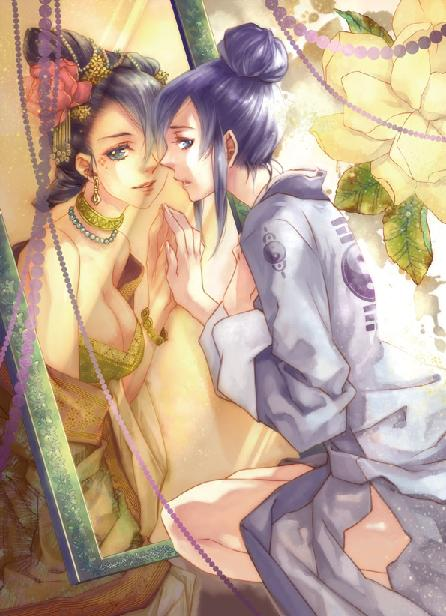
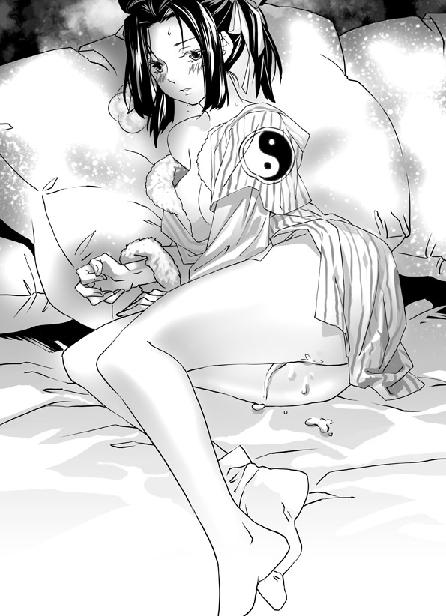
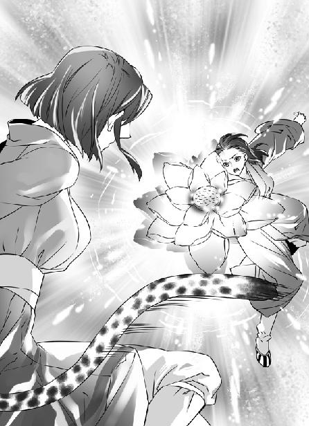

第28集·满川虎辈
江州篇（4/7）
出版日期：2011-11-10
【本集内容简介】
来到六朝后，程宗扬还是第一次遇到诈骗！贼尼假借宗教名义行敛财之实，甚至连女徒都拿出来卖！不过，精明狡黠的秦桧仍乖乖掏钱，这贼尼的身份是……
常平仓一烧，星月湖立刻化被动为主动，决意将夏用和的大军分批吃下。乱枪打鸟的火炮、柔韧坚实的铁丝网，星月湖的奇计层出不穷，真能顺利逼迫宋军退兵吗？
※ ※ ※ ※ ※

封面人物：卓云君

插图：申婉盈

插图：静善、慈音
建康，乌衣巷。
晋国丞相王茂弘慢吞吞地看着文书，良久才交给谢太傅，然后闭上眼睛，手掌摩挲着膝盖，似乎要昏睡过去。
坐在下首的王文度却没有他那么好耐性，作揖道：“王丞相！宋军入境，视我大晋朝廷如无物，岂可听之任之？”
坐在他旁边的是仆射周伯仁。今日朝中重臣在相府议事，周伯仁却一坐下来就连呼上酒，还未开始议事已连饮数杯，这时拿着酒樽，醉醺醺睁开眼睛，讶然道：“我大晋朝廷如今可有物吗？”
王文度为之气结。这位周仆射少有令名，身居高位，却终日沉缅于酒，好作惊人之语。当日在舟中就是他第一个说的“风景虽佳，奈何不得其主”，如果不是大晋真的不得其主，就他这张大嘴巴，少不得要下狱问罪。
桓大司马满不在乎地说道：“宋军不过是借道而已，王侍中何必惊扰？”
“宋军在江州立下营寨，重重围困，十日前已经开始攻城，哪里是借道！”王文度又朝王茂弘一揖道：“王丞相！江州虽小，也是我大晋土地，岂可容宋军放肆？此事关乎朝廷体面，请丞相三思！”
“唔唔……”王茂弘连连点头，似乎对他的话十分认可。
谢太傅一览而过，随手把文书递给周仆射。周伯仁一下子没有接住，王文度抢过来，一看之下不禁大惊失色，“十万！”
谢太傅安慰道：“匪寇不过千余，宋军剿过匪便罢了。”
王文度拿的是宋国的国书。因为晋帝重病，无法上朝，政事都由丞相处置，因此朝中重臣一大早都聚在丞相府中。书上写着宋军借道江州，不意遭遇匪寇，死了一名都指挥使，如今正在剿匪，请晋国予以谅解。
看到谢太傅从容的样子，王文度暗自惭愧，自己气度终究还是有所不及。他镇静了一下，勉强道：“萧侯坐镇江宁，哪里会有匪寇？即便有匪寇，以萧侯的勇武，举手便平定了，何必由宋军越俎代庖？”
玄武湖之战，桓大司马虽然在王谢两家的压力下选择观望，但与萧道凌交情匪浅，闻言当即道：“萧侯手里哪里有兵？”
王文度掷下文书，冷眼道：“大司马不必诳我！萧侯当日离开建康，至少从石头城水师大营带走了万名精兵，难道面对千余匪寇便束手无策？”
“莫吵，莫吵。”王茂弘咳了一声，睁开眼睛，“少陵侯在宁州，以他的部曲，能守住大江便不错了。至于江州的匪寇，便交给宋军去操心吧。”
王文度叫道：“丞相！”
谢太傅劝道：“由于江州匪患，百姓都已迁到宁州，如今少陵侯麾下并无兵丁，只有万余部曲。因此丞相已命幼度带北府兵前去，以保宁州无忧。晋宋两国向来交好，清除边境的匪寇未必是我大晋一家的事。况且宋国贾太师书中已经说过，清剿江州匪寇之后，江州城池房舍都由宋国重建，更不敢占我晋国寸尺土地。”
王文度出身世家，如何听不出他的言外之意？谢太傅这番话有几重意思：其一是只承认少陵侯手下是部曲，也就是依附于主人的家兵和私兵，而不是朝廷募集的正式军队。其二是北府兵的动向，说是保宁州无忧，实际是控制形势。第三层意思则是暗示毁掉江州城也在所不惜。
王文度终于明白过来，王丞相和谢太傅对宋军入境非但毫不在意，竟然还腾出江州的土地让宋军与匪寇厮杀。震惊之余，王文度脱口道：“那伙匪寇究竟是何人？”
“还能有谁？”说话的却是周仆射，他一口饮尽樽中美酒，然后呼了口气，“岳武穆，星月湖余孽。”
“砰”的一声，王文度肘边的小几跌落在地。
※ ※ ※ ※ ※
程宗扬从浮凌江上岸，江畔已经有马车等候，车夫戴着斗笠，看起来有些面熟。程宗扬也没在意，把被褥裹着的贱人塞到车里，自己乘了匹马，返回城中。
已经过了申时，程记粮铺还未打烊，门前的水牌上标着每石四百铜铢的价格。阶下停着几辆载满粮食的大车，祁远正和一名客人在店内商讨价钱。程宗扬朝他作了个手势，让他继续谈生意，自己从侧门进了院子。
院内堆着新购来的粮食。易彪正在看守放钱的仓房，他拉了条长凳坐在门前，见到程宗扬只是点头致意，报了平安，并没有起身。
秦桧迎出来道：“原以为公子昨日就回来，却等到今日。”
程宗扬边走边道：“路上长伯跟我说了。王团练那边情形不好？现在是什么说法？”
秦桧苦笑道：“正是没有说法，在下才觉得事态不妙。王少爷自家不慎烧着衣服，又被家仆泼上灯油，才酿成大祸。此事香竹寺大门前几百人都看得清楚，王团练自然无法委过公子。但王少爷出事的由头却是公子身边的那位美婢，王团练明面上无法委过，暗中迁怒定是少不了的……”
说着，秦桧住了口。
程宗扬瞧出异样，“怎么？他想找我麻烦？”
“我私下找过王团练的管家打听，他言语中透露，王团练知道是少爷调戏公子的美婢才出了事，在家里大发雷霆。”
“朝王少爷发火？”
秦桧摇了摇头，“是朝公子发火。那管家说，为了一个奴婢酿成这等祸事，直接打杀了便是，公子如此护短，好不晓事。公子若不舍得杀，就送到府中伺候少爷，事平了再还给公子。”
程宗扬火冒三丈，“放屁！”
秦桧从容道：“在下知道公子定是不肯的。昨日开市，我找牙人买了两名出色的婢女，公子明日赴宴，我便把人送去。”
程宗扬暗道：不如把卓贱人送给他！凭卓贱人的手段，要不了两日就弄死那小子！但这事程宗扬只是想想，自己也没有当真。
“息事宁人也未尝不可，王团练若是接了，往后两不招惹。拉他下水的事不用再提了。”
“是。”秦桧顿了顿，然后道：“还有件事，孟团长派了人来。”
程宗扬立刻站了起来，“在哪儿？出了什么事？”
秦桧道：“并不是什么大事，是鹏翼社的车马行到筠州开了分号，昨日才租下铺面，来了十几个人。”
“来的是谁？”
那名车夫走进来，摘下斗笠。程宗扬看了半晌，才从他眉眼的轮廓中找到一丝熟悉的痕迹，叫道：“俞子元！怎么是你！”
“程少校。”俞子元行过礼，笑道：“在下的易容术还过得去吧？”
“什么时候化妆成个娘儿们让我认不出来，那才叫本事呢。”程宗扬笑道：“江州那边恨不得一个人切成两个使，孟老大怎么舍得派你来了？”
“来的就我一个，其余的都是从其他分社调来的兄弟。”俞子元笑道：“如今筠州生意好，换了筠州车马行的招牌来赚几个钱。”
程宗扬一听就明白，鹏翼社被宋国盯上了。社里的星月湖旧部大都去了江州，孟非卿怕自己人手不够用，暗中派了人来，换了名字在筠州开分社，一是方便自己行事，其次也是给自己安排一条后路。
如果在以前，自己会觉得孟老大过于小心，现在自己与云家安排的王团练结仇，倒要佩服孟非卿的谨慎了。有了这些得力的臂助，自己更多了几分底气，即使与王团练翻脸，自己抱着金铢逃命，谅他们也追不上。
※ ※ ※ ※ ※
店铺本来只够五六人居住，自己房里已经有了小紫和梦娘，这会儿又多了卓云君和申婉盈，哪里还有住处？申婉盈还好说，卓云君那贱人却是时刻不容她脱离自己的视线，绝对不能把她放在外面。眼下不是找房子的时候，程宗扬便让她们两个打了地铺，又在房内拉了一道帘子。不是把她们两个隔开，而是避免被外面看到。
秦桧买的两名美婢留在牙人处，准备明天赴宴时直接带去。程宗扬打定主意没有去看，免得见了心软。如果因为王团练而坏了自己的大事，江州之战再拖延下去，死伤的都是自己的弟兄。孰重孰轻，自己还是清楚的。
吃过晚饭，程宗扬坐下来开始看这两天的账簿。城南的粥棚和知州滕甫的赞许，给自己带来不少方便。筠州人都知道程记粮铺的东家仁义，收粮价格比别处高出许多，买粮又是施粥行善的好事，已有几个大户人家来卖粮，这两日收了近三千石。院子里堆的粮食不是来不及入库，而是库房已经满了，只能堆在院子里。
这三千石粮食都是按四百铜铢的价格收的，一共用了近六百金铢。最大的一笔开销则是日昌行老板周铭业的一万石粮食。原本说好三万五千银铢，十日之内再加一成，周铭业为了挣这一成利润，只怕年都没过，昨天已经传来消息，说是备好了货，只等搬运。至于价格，以金铢结账的话，只收一千九百枚。
程宗扬用笔杆掏了掏耳朵。手里一下子有了近两万石粮，用去近三千金铢。这两万石粮食折一千多吨，要是全搬到粮铺来，大家只好睡在粮食上了。要是直接从浮凌江运走，又太过招摇，必须想个办法掩人耳目才好。
因为房间不够，自己只好拿一间库房当作办公室。比起自己以前待过的现代化写字楼，这个连窗户都没有的库房显得很寒酸，充作座椅的木箱也远远不如皮革座椅舒适。但一想到屁股下面坐着足足二百公斤的黄金，程宗扬就觉得特别安心——单是份量就压倒世上任何一张豪华座椅，实在太奢侈了。
至于房间另外一角的箱子里则装着一批从江州带来的烟花。一是金铢，一是烟花，能不能在筠州打开局面，就看这两样东西的威力了。
程宗扬心不在焉地拨了拨灯芯，正思索间，院外传来一个柔和的声音：“阿弥陀佛。”
程宗扬停下笔杆，听着冯源趿了鞋子，“踢踢哒哒”地跑过去，拉开门就是一句：“无量天尊！”接着道：“喂，师太，这儿是我们道家的地盘。你若想化缘，一来天晚了，二来你也敲错门了。”
程宗扬莞尔而笑。各大宗门都以道家自居，冯源法术不怎么样，他们平山宗也没沾道家什么光，维护起道家的利益却是不遗余力。
那尼姑也不生气，柔声道：“贫尼自香竹寺来，欲见你家主人。”
听到香竹寺，程宗扬心里不禁暗暗叫糟。自己偷了根竹子，竟然被失主找上门了。
冯源道：“我家公子不信这个。别以为我们程头儿设棚施粥是你们的功劳，我们程头儿那是天生的心善，跟你们佛家没关系。你知道平山宗吧？你知道今天在粥棚掌勺分饭的就是我们平山宗的大法师吗？你知道……”
“我与程公子乃是旧识。”
一句话把冯源的滔滔不绝堵了回去。过了会儿，冯源道：“程头儿，外面有个尼姑说是找你的！”
程宗扬叹了口气，搁下笔，先揉了揉脸，弄出笑眯眯的一团和气才出门。
一名四十多岁的尼姑立在门外，她眉眼柔和，头上戴着尼帽，手拿拂尘，胸前挂着一串佛珠，看起来也不是什么贵重木料。程宗扬看到自己在观音堂撞上的年轻尼姑没有跟来，心里顿时松了口气。没有目击证人，自己打死不认账，她也没辙。
程宗扬先行了一礼，假惺惺道：“师太可是来化缘的？来人啊，取两串钱来，给师太奉上。”
“贫尼并非为化缘而来。”
“那是化斋？哎呀，我们这儿不忌荤腥，没什么素食。茶水倒是素的，不知道师太……”
“贫尼也非是为化斋而来。”那尼姑双手合什，念了声佛号，然后道：“贫尼慈音，乃是为香竹寺之事而来。”
“原来是慈音师太。还真是巧，大年初一我才去贵寺上过香。”程宗扬装傻道：“贵寺真是灵验，听说金刚像会自己倒下来压住恶人——不过这事跟我可没关系。”
慈音慈眉善目地说道：“金刚显圣，镇恶驱邪，公子得见，乃是福缘。不过贫尼亦不为此事而来。”
那就是香竹的事了，死尼姑这么笃定，先杀杀她的威风再说。程宗扬抱起肩膀，“刚才师太说与我是旧识——咱们好像没见过面吧？”
慈音淡淡道：“若不是如此说，如何能让贵属闭嘴呢？”
程宗扬看了慈音尼姑几眼，“我记得出家人不打诳语的吧？”
“阿弥陀佛，贵属是好辩之人，能省些口舌，想必佛祖不会怪罪的。”说着她自顾自地朝院中走去，一边道：“出家人所需不多，公子刚才说有素茶，便来杯素茶吧，素点府上既然没有，公子就不必麻烦了。”
这尼姑一点都不把自己当外人，程宗扬只好亲自跑回去捧了茶来，请慈音在院中坐了，一边向易彪使了个眼色，让他到仓房内回避。
“师太既然不是化缘讨斋，又不是因为在下曾至寺里上香，不知这么晚来，找在下何事？”
慈音看了看茶水，“没有饼茶吗？”
杯子里泡的是自己惯喝的茶叶，没想到一个尼姑这么挑剔，还要饼茶。有也不给你喝！
“没有。”
“哦……”慈音浅浅尝了一口便放下杯子，左右打量，“这院子也不大呢。”
“比起贵寺是小了很多，哈哈……”
程宗扬打着哈哈，慈音倒叹了口气，“檀越不知，大有大的难处。庙大了，免不了有些宵小之辈趁机出入。我一个出家的尼姑总不好出面去管，有时候贼人进出也是免不了的。”
程宗扬放下杯子，“师太，你这是当面骂我的吧？”
慈音讶然道：“我是说王团练家的少爷，公子想到哪里去了？”
程宗扬心里骂了声“贼尼”，索性道：“不错！是我拿了你们的竹子，不过出家人四大皆空，割肉饲虎也割了，为了一根竹子用得着找上门吗？那根香竹我已经扔了，师太若是不乐意，我出钱给你们修座金刚像怎么样？”
慈音笑逐颜开，双手合什道：“阿弥陀佛。公子一片善心，贫尼多多谢过了。不过呢，贫尼也不是为香竹而来。”
程宗扬怔了一会儿，半晌才道：“你门也进了、茶也喝了、重修金刚像你也笑着纳了，这会儿又说不是为这事，那你干嘛来了？”
“小徒静善失了颗佛珠，还请公子赐还。”
那颗金星紫檀的佛珠——程宗扬心里干了一声，这尼姑还真是抠门，为一颗佛珠，巴巴地跑上门来。
“师太早说啊！用得着绕这么大的圈子吗？”
慈音低眉顺目地说道：“贫尼也无法，若说得早了，只怕公子不认。”
程宗扬噎了一口。她若开门见山就要佛珠，自己可能真的来个抵死不认。说到底还是自己做贼心虚，沉不住气，先漏了底。
这会儿说什么都晚了，程宗扬只好道：“等着。”
程宗扬回房从背包里翻出那颗佛珠，朝小紫翻了翻眼睛，又顺手在卓云君身上捏了一把，再出来递给那尼姑。
慈音眉开眼笑，“承情承情。”她接过佛珠，纳入袖中，一边站起身，双掌合什，“贫尼今日就不打扰了。庙里的金刚像还请檀越多多费心。公子若是事忙，贫尼就明日再来，请留步，请留步。”
程宗扬险些吐血，这贼尼是讹上自己了，自己若不给香竹寺修金刚像，她就天天上门来打扰。死丫头，你这一下可砸了好几百石粮食出去。
程宗扬边走边道：“师太，过两天我到你庙里去，你千万不用来了。修座金刚像要多少钱，你出个价来，我一文不少地交到你手里。”
“檀越想必是误会了，贫尼只是在观音堂挂单，寺里修佛像的事与贫尼不相干。再说，贫尼是出家人，怎么好去拿铜钱，染上一身铜臭呢？要知道，贫尼用的钵盂还是紫金的呢。”
“……你是想要金铢吧！”
“金、银都是佛家七宝，贫尼自然是不忌讳的。公子既然发大善心，愿以金铢重修金身，贫尼便代为收下，想来寺里的师兄也不会见怪。”
慈音在门口停下脚步，转过身，客气地施礼道：“公子刚才说还有两串钱？出家人清苦，要足陌的才好。”
居然怕是小串，还指明要足陌的！程宗扬道：“成串的都是铜铢！师太不怕铜臭味？”
慈音从善如流地说道：“公子说的是，那便换成两串银铢吧。”
两串铜铢和两串银铢可差了一百倍，贼尼姑真能张开口！
程宗扬黑着脸拿出十几枚银铢，“就这些了！”
似乎是看到程宗扬脸色不好，慈音没有再挑剔，接过来纳入袖中，合什道：“阿弥陀佛，公子留步，改日再结善缘。”
善缘个鬼啊！程宗扬拍上门，转身叫道：“死丫头！那根香竹呢？我要把它做成马桶刷子！”
内院的一间耳房打开门，却是林清浦朝自己招了招手。
店铺的房间不够，祁远、冯源住一间，易彪、敖润和吴三桂挤在一间，林清浦的水镜术需要静室，原本单独住一间，现在人手一多便只能与秦桧同处一室。这会儿死奸臣出去散步，九成九是去常平仓踩点，只有林清浦一人在屋内。
掩上门，林清浦道：“那师太的法号可是‘慈音’？”
“你认识？”
“只是听说过。”林清浦道：“据说慈音出自玉音庵，也是十方丛林一支，多年来云游天下，四处化缘，没想到会在香竹寺挂单。”
“十方丛林出来的？这贼尼简直是从钱眼里生出来的，太能搂钱了。”
林清浦道：“慈音师太十余年前大发弘愿，要建一座观音行院。”
“难怪呢。建座观音行院要不少钱，老尼姑抠死也未必能建起来。”
林清浦咳了一声，“慈音师太打着玉音庵的名号四处化缘，江湖中的施主看在十方丛林的面子上纷纷解囊，数年间便赚够了建观音院的钱。慈音师太曾说观音院建成之后，要为施主立碑传世，结果她化够缘，一没寺庙，二没碑记，那笔善款也消失得无影无踪。”
程宗扬怔了一会儿，叫道：“这个死尼姑是骗子？”
林清浦道：“江湖中风言风语，但此中内情在下就不清楚了。慈音师太带了那笔善款一走了之，有几年不闻音讯，没想到会在此地见到。”
程宗扬想起那个小尼姑打出佛珠的指力，单凭这手修为，真要打起来，自己也未必能占到便宜。难道慈音这个贼尼还不如她的徒弟？要靠招摇撞骗为生？
“骗子吗？”小紫听他说完，眼睛立刻亮了起来，笑吟吟道：“人家最喜欢骗子了。”
“你是喜欢骗那些骗子吧？”
“骗傻瓜一点都不好玩，骗那些自作聪明的傻瓜才好玩。”小紫一脸期待地说：“人家还没骗过尼姑呢，既能骗财，又能骗色，一想就很开心哦。”
“……死尼姑祖宗的坟头这会儿肯定在冒青烟。”
程宗扬累了几天，明天又要赴王团练的宴席，也没心情与卓云君师徒胡混，只和小紫逗了一会儿，倒在床上便睡了。
※ ※ ※ ※ ※
第二天一大早便刮起北风，天气愈发寒冷。程宗扬披了一件玄黑色的大氅出来，鹏翼社的马车已经停在门前。
有了鹏翼社的车马，出门方便许多。程宗扬带上祁远和冯源，一道前往王团练位于城南的大宅。祁远管着粮铺，自己若离开筠州，诸事都由他打理，这次赴王团练的宴席当然少不了他。冯源算是半个烧伤大夫，这趟是去看看王少爷的伤势。秦桧则去牙人处取了那两名新买的美婢，暗中送往王宅。
王团练的宅院在城外，他是筠州的地头蛇，经营多年，房舍占地颇广，两扇黑漆大门较之荆溪县衙还大了些，不过这会儿大门紧闭，只在侧院开个角门供人出入。今日来的都是城中的商户，说得好听些是前来赴宴，说得直白些，都是来给王团练送孝敬的，能走角门已经不错了。
程宗扬进去便看到孙益轩，这个云家布在筠州的暗桩朝他使了个眼色，装作随意地进了茅厕。
“事情的经过，公子的伴当已经跟我说了。王团练向来睚眦必报，这次的事只怕不好善罢干休。”孙益轩低声道：“公子想抹平此事，要先献出那名美婢才好谈。”
程宗扬一口回绝，“此事再也休提。”
孙益轩点了点头，“我这便掐断与王团练的联系。公子虽是做的正当生意，也请多小心。”
程宗扬从茅厕出来，冯源已经去内宅给王少爷看伤，祁远在外面守着。
“找到席位了吗？”
“在那边，院中第九席。”
“王团练的客人真不少，连房间都坐不下，还要摆到院子里。”
“堂上只摆了三席，剩下的都在院里。席位也不是按身份高低、生意大小排的，只看送的礼金多少。送的多坐首席，少的坐末席。”祁远悄悄道：“商户也是讲面子的，有些送的礼金不够，被赶到末席或是院子里坐，到了端午节又加倍送礼，只为坐个好位子。”
“这个王团练倒会做生意。”程宗扬冷笑道：“就是这生意霸道了些。”
程宗扬刚寻到自己的席位，旁边一名等候多时的家仆便道：“是程老板吗？老爷请程老板到堂上坐。”
听到这声招呼，周围不少人看过来，羡慕、讪笑、同情……各种目光都有。程宗扬作了个罗圈揖，笑道：“王团练有命，不敢辞。得罪了，改日请诸位吃茶。”
众人纷纷抱拳还礼，自己刚走，背后就议论声四起。程宗扬也不理会，到了堂上才发现自己的位子在首席。程宗扬明白这顿饭不好吃，与众人揖了揖手，便坐下来等王团练出面。
不多时，一个中年人进来，他四五十岁年纪，身材魁梧，穿着一身黑色的茧绸袍，两道卧蚕眉，目光倒看不出什么异样。
堂上、堂下的客人都站起来向主人问好。王团练只略抱了抱拳，“这几日家中有事，简慢了些。”
说着，旁边的家人送上酒菜，都是些平常之物，值不了几个钱。来的客人也不是为酒菜，都道：“这一年小的们受了多少恩惠，本该请团练一场，却来叨扰，团练大人太客气了。”
酒过三巡，王团练执壶开始敬酒。前几位都是城中的大商贾，知道王团练的规矩，小心告了罪，逊谢几句便接来喝了。
程宗扬站起身，“粮商程宗扬，见过王团练。”
王团练斟了一个满杯，淡淡道：“程老板事忙，今日才得见面，一定要多喝几杯。”
程宗扬平常都穿布衣，今日因为赴宴，特别披了条大氅，借以掩饰腰后掖着的两柄快刀。他接过酒杯一口干了，“初来乍到，不懂规矩，还请王团练多多指点。”
“程老板设棚施粥，连知州大人也赞许过的，王某哪里敢指点。请。”
程宗扬一连饮了三杯，王团练还要再斟，他一手覆住杯口，微笑道：“在下连喝三杯，再喝，就要让座中诸位笑话不懂礼数了。”
王团练哈哈一笑，“我敬的酒便是礼数，程老板尽管放宽量，几杯薄酒，王某还是奉得起的。”
席上几个都是成精的老商贾，听着双方唇枪舌剑，一个个都扮成庙里的菩萨，一句也不开口。
王团练果然是个狠角色，这番话说得狠辣，越是这样，自己越不能喝。程宗扬微笑道：“让团练敬酒，在下已经是僭越了，不如让在下敬王团练几杯。”
王团练仰天大笑，半晌才收住笑声，“这就是程老板不懂规矩了。今日是王某请客，程老板远来是客，怎好让程老板来敬酒。”
“虽是客人，心意却是十足。请王团练莫负了在下一片心意。”
王团练执壶盯着他，似乎在判断他有多少诚意。堂上鸦雀无声，正沉默间，一个家人过来，在王团练耳边低低说了几句。
王团练放下酒壶，道声“失陪”，便进了内室。
程宗扬也不干站着，坐下来挟了口菜，慢慢吃着。旁边一席坐着日昌行的周铭业，悄悄向他竖了竖拇指，赞他被王团练逼酒还镇定自若。
程宗扬知道这会儿是秦桧把人送来，王团练进去看礼物。秦桧选的两名美婢花了自己不少钱，王团练若是满意，这事就算揭过去了。
过了一刻多钟，王团练满面春风地进来，连声告罪，然后拿过酒壶，这次却隔过程宗扬，往下敬酒。
程宗扬松了口气，随意吃了些菜，便即告辞。王团练也不挽留，只道：“来人啊，替我送送程老板！”
程宗扬离开院子，便看到祁远、秦桧、冯源、俞子元几个正聚在一处等候自己，脸色不是一般的难看。
程宗扬心里一沉，“怎么了？”
祁远道：“程头儿，你再不出来，我们恐怕得进去抢人了。”
“出了什么岔子？会之，你不是送了两名美婢给姓王的吗？”
“送了。”秦桧沉声道：“王团练带了那两名美婢去见王少爷，问明不是那天在庙里见到的，当场便打死了。”
程宗扬牙关“咯”地咬紧。王团练出来时满面春风，谁知道他刚在后宅杀了两名无辜的女子，还那么若无其事。
冯源道：“我给王少爷治伤，亲眼看到的。王团练拿棍子打死两名美婢，然后对少爷说，让他安心养伤，一个商人婢有什么要紧的？若是不识相，连商人妇也一并夺来伺候少爷——程头儿，我只是在旁偷听来的，作不得准。”
“什么偷听，他是说给我听的！”程宗扬杀机立涌。不除掉王团练，自己的粮食生意也不用做了。
俞子元初来乍到，对情形不太了解，不过看众人的神情也能猜出几分，低声道：“公子……”
程宗扬明白俞子元的意思。凭自己现在的实力，要杀死姓王的算不得什么难事，但如今满城都知道自己与王团练有仇隙，王团练莫名其妙被杀，头一个怀疑的就是自己。
“先不用急。”程宗扬道：“会之，从滕知州那边开始做吧，王团练这条路已经堵死了。”
“是。”
“告诉长伯，开始往荆溪运粮。子元，这件事要辛苦你了。”
“是。”
“老四，孙老板那边你去知会一声，详情不必多说，只说我们准备走别的门路。”
几个人都答应了。程宗扬道：“冯大法，那个小王八蛋伤势怎么样？能不能活过春天？”
“王少爷只伤着头脸，我给他涂过药，性命是无忧了，倒是被砸的那一下伤得重，骨头断了七八根，就算能保住性命，也是个废人。”
“大伙戒备些。”程宗扬冷着脸道：“咱们外来是客，能不动手绝不动手，但谁要敢动手，怎么收场，由咱们说了算！”
※ ※ ※ ※ ※
离开王团练的府邸，程宗扬直接赶到粥棚，林清浦领着几个帮忙的民夫刚开始施粥。
秦桧一路看程宗扬的举动，对他的心意明白了八九分。他掖好袍角，一副短打扮地跨到桌上，冲着领粥的民夫、村人抱了抱拳，张嘴便是一口的土话：“各位乡里乡亲！这位就是给咱们施粥的大善人！程记粮铺的老板！程公子！”
众人一片谢声不绝，有几个体弱的还跪下磕头。
“我们几个是远处来的，在山里遇雪受了寒，走不得路，当官的扔下我们便走了。若不是程大善人给了口热饭，连尸骸都回不了乡。”
程宗扬连忙扶起来，“老人家，别这么说！我也是受过穷的，知道饿肚子的滋味，大伙儿千里迢迢运来粮食，自己却吃不上一口，我虽是异乡人，心情却与你们一样。夫子说，四海之内皆兄弟也！在下年纪轻轻，不过手里有些粮食，哪里受得了各位的大礼呢？”
“恩人呐！”
程宗扬扶着几人起来，一边提高声音道：“各位！我知道大伙儿这时虽然吃着饭，心里却还悬着，担心中午吃了，晚上还有没有？今日吃了，明日还有没有？”
人群里发出笑声，“极是！极是！”
“我今天在这里说一句：大伙儿不用再把心悬着了！”程宗扬用力一挥手，“这粥棚今日开、明日开，过了十五照样开着！不管你是南来的北往的，只要肚里乏食，尽管来吃口热饭！”
在众人的欢呼声中，程宗扬大声道：“有人说，我粥棚里的份量实惠，会把人都引来。有些人家里有粮也来吃现成的，落得便宜。我说，一口白粥哪里会吃穷了？各位民夫兄弟从家乡扛着粮食来筠州，这是为国效力！接济了旁人，自己却空着肚子，哪有这般道理？即便我粥棚里份量实惠，即便十里八乡的乡亲们都来吃，即便有人贪便宜，但只要有一个往前方运粮的民夫兄弟还在，我程宗扬就不能让他空着肚子离开咱们筠州！”
程宗扬声音响亮，在场几千人听得清清楚楚，听着他的话语，人群的欢呼声越来越高，后来他每说一句，都迎来一阵欢呼。听到最后，不仅那些民夫，连过来蹭饭吃的本地人都念着这位大善人。
等呼声渐歇，程宗扬抱拳道：“兄弟还有一肚子话要说，可若再废话，只怕耽误大伙吃饭，落了埋怨。”
众人都大笑起来。
“我就剩最后一句，说完就走，大伙儿安心吃饭。”
场中安静下来，等着他最后一句话。
“今日是初七，城里各行都开了业，大伙儿吃饱了饭，身上有了力气，便去城里找份工。我这粥棚别的做不到，让大伙儿填饱肚子，后顾无忧，把钱都攒下来，早日挣够回家的盘缠，还是能做的！”
这句话一出，当即就有人掉下泪来。
“男儿有泪不轻弹，别人若见了，还以为我这饭菜不好。这样吧，今天每人给一颗咸蛋！白粥管够！吃饱了不想家！”
如今盐价高昂，能有咸蛋吃，便是好人家。每人有一颗咸蛋，这是作梦也想不到的好事。众人又哭又笑，就像滚油中泼了碗凉水，把“程大善人”的名号念不绝口。
程宗扬回到粥棚，秦桧看了他半晌，然后叹道：“秦某一向自负口才，公子这番话却怎么也想不到，更不能像公子这般如话家常，却一字一句都能进到人心里。”
“调动调动大家的情绪，给咱们粮铺扬扬名罢了。”
“公子说得小了。”秦桧朝领粥的人群展臂划了个圈子，低声道：“看看这些民心！公子这番言辞，人人都有效死之心，即便这会儿面对千军万马，只要公子振臂一呼，他们赤手空拳也冲杀过去了。”
“你不会是想暗示我打筠州吧？”
秦桧低低一笑，“有何不可？”
程宗扬叹了口气，“给别人吃口热饭就让别人去做炮灰，这种事我做不出来。”
秦桧愕然道：“什么炮灰？”
“你放过鞭炮吧？鞭炮点燃了，‘啪’的一响冒股烟，剩下的就是炮灰。”
秦桧不由怔住了。
程宗扬拍了拍他的肩，正要开口，一名随从打扮的汉子奔进来，叫道：“程公子在哪里？”
程宗扬出面道：“找我有事？”
随从屈膝施了一礼，恭恭敬敬地说道：“我家老爷有请！”
程宗扬与秦桧对视一眼，“你家老爷是哪位？”
“滕知州。”
程宗扬一愣，“怎么没见知州的仪仗？”
“我家老爷是便服来的。”那随从爬起来，佩服地看着他，低声说道：“公子那番话小的也听到了，若不是跟着老爷，小的这会儿便到粥棚给公子帮忙。私下向公子说句，我们老爷是个铁面人，陛下发脾气也不怕的，又跟贾太师大吵一番，才贬到这里来。但公子那句‘只要一个民夫在，就不让人家空着肚子离开筠州’——小的瞧着我们老爷眼睛也湿了。”
※ ※ ※ ※ ※
程宗扬兴冲冲地进来，“啪”地掩上门，叫道：“卓贱人！过来让老爷爽一下！”
小紫道：“这么高兴？王傻瓜的事办妥了吗？”
“翻脸了！”
小紫白了他一眼，“那你有什么好开心的？”
房内拉着帘子，没看到卓云君和申婉盈。程宗扬心情畅快也不在意，坐在床上道：“我见着知州滕甫了，他答应，我在江边设一处粮仓，专门用来赈济没饭吃的民夫和城中的贫民。”
小紫撇了撇嘴，“我还以为是什么事呢。”
程宗扬笑道：“有了这处粮仓，每日只管往仓里运粮，夜间再装船运走，谁也瞧不出来。”
程宗扬没想到事情能解决得这么顺利。见面的时候，滕甫态度很温和，丝毫没有传说中的严厉，反而问他施粥有没有什么难处。程宗扬灵机一动，说前来领粥的饥民太多，因为粮食无处堆放，每天都要运几次，市面交易的粮食又是带皮的，需要随时舂好，却找不到合适的地方。
自己只是随口提出来，滕甫当即说道，便在江边设一处粮仓，地皮、砖石都由官府拨出，这里有服徭役的民夫，也由官府统一征用。粮仓建好之后，官府并不插手，由程记粮铺经营。
程宗扬的感觉就像一个流着油的肉馅饼从天而降，正好砸到自己脑门上，但他心里明白，这位滕知州只是一时激动，自己如果答应下来，立刻就会成为众矢之的。占了官府这么大的便宜，往后想抽身也没那么容易。
秦桧七窍玲珑，一点就透，当即挺身而出，义正辞严地替家主推辞，声称家主程公子施粥本是出于仁厚，既然来筠州经商，为筠州分忧也是分内之事，并不冀求回报，况且官仓私营于体制不合，建议粮仓只在施粥期间由程记粮铺借用，一旦战事平定、民夫散去，就交还官府。
滕甫连连称许，说道：“有其主乃有其仆！连下人都有这般见识，可见程公子平素行事有方！”
程宗扬连声逊谢，心里却乐开了花。这样自己可以堂而皇之地收购粮食，再以施粥的名义运到粮仓，任谁都不会起疑。至于每天都要运粮，当然是粥棚用度太大。现在每天来吃粥的都有几千人，自己就是报个上万人也有人信。人口繁杂，谁能数得清楚？更重要的是自己有了滕知州这座靠山，谁想来找麻烦，都得掂量掂量。
滕甫曾在朝中担任御史中丞的高官，与贾师宪不合才请郡外放，到筠州任知州。宋国宰相一级的高级官员下到地方担任州府长官，或者由州府官员不数年便升任宰相是种常态，谁也不敢说滕知州明年会不会又成了滕相爷。有了滕甫这张成色十足的虎皮，程记粮铺行事更加方便百倍。
程宗扬将粮仓位置选定在河湾附近，就在常平仓之后，表面上是因为施粥结束，粮仓便即交公，将来围墙一圈就成了常平仓的一部分，其实是借着常平仓那一排十几座大仓的掩护，方便自己往浮凌江运粮。
当天下午粮仓便开始动工，建仓的工匠都来自滞留的民夫。因为是修建给自己吃饭的粮仓，人人感恩，不惜力气，速度比平常又快了数倍。用不了五六日，两座各能容纳五千石的粮仓便可建成。
粮仓的事双方有志一同，皆大欢喜，与王团练翻脸的危险性也因为搭上滕甫这线而降低了许多，程宗扬心情顿时轻松起来，“卓贱人呢？”
小紫却道：“我要去看尼姑。”
程宗扬奇道：“什么尼姑？”
“香竹寺的尼姑。”
“慈音啊？那死尼姑有什么好看的？”程宗扬压低声音，耳语道：“咱们都出去了，卓贱人怎么办？”
小紫笑道：“带她一起去好了。”
“别开玩笑！”程宗扬道：“筠州有太乙真宗的道观，他们不认识咱们，但肯定认识卓贱人，带她出去，让有心人看见就麻烦了。咦？卓贱人呢？”
“在里面呢。”小紫眨了眨眼睛，笑道：“我自有法子，你去叫马车来。”
鹏翼社一天十二个时辰都有马车在巷口，他们对外说程记粮铺的老板仁厚，听说这间筠州车马行是新开张的，因此包了他们的车马来用。
程宗扬出去交代一声，马车立即驶到门外。车夫已经得到大营的军令，一句话都不问，只等程少校的命令。
程宗扬等了片刻，小紫便推门出来。筠州虽然不常下雪，这两天却寒风刺骨，她穿了一袭小羊羔皮缝制的轻裘，抱着一只狐皮暖手，一绾青丝垂在胸前，水盈盈的美目带着天真好奇的稚气，怎么看都像一名不谙世事的纯美少女。
程宗扬看周围没人，低头在她粉嫩的玉颊上香了一口，“死丫头，打扮这么嫩，出去就说是我新纳的小妾好了。”
小紫笑吟吟道：“你新纳的小妾在后面呢，出来吧。”
门帘微动，出来一名浓妆艳抹的女子。她画着长长的黛眉，嘴上是浓浓的胭脂，又红又艳，上身穿着一件翠绿的衫子，虽然是冬季，却敞着襟，里面的抹胸开得极低，露出大片雪白的胸脯，腰间系着一条花汗巾，下身穿着一条水红的百褶长裙，看起来就像青楼艳妓，哪里有半点以前的模样？
程宗扬像不认识一样看着打扮艳俗的卓云君，半晌才笑出声来，卓贱人这模样有够看的啊。
“走啊，看尼姑去喽。”
小紫笑着登上马车，卓云君亦步亦趋地跟在后面。
程宗扬跳上车，对车夫说了香竹寺的位置，然后放下厚厚的车帘，笑道：“卓教御这么个大美人儿，硬被你打扮成路边的野鸡，恐怕蔺老贼见了也认不出来。喂，卓贱人，你的脸这么红，是因为抹了胭脂，还是羞的？”
卓云君笑了笑，身子依偎过来拥住他的手臂。
卓贱人这么主动，真有些娼妓的样子。程宗扬看得有趣，搂过她粉白的颈子，狎戏地亲住她的小嘴。卓云君被他压在座椅上，仰脸送上唇舌，任由主人痛吻一番。
程宗扬一边吻，一边手不老实地在她身上游走。一摸之下，程宗扬才知道卓贱人为什么这么主动。不知道死丫头是从哪间成衣店买来的衣裙，都是极薄的夏装，隔着衣物能感觉到卓云君丰腴的肉体微微发抖，显然受冻了。自己体内真气充沛，又披着大氅，身上毫无寒意。马车虽然遮着布帘，但没有放火盆，温度也只比车外好一点。
沐羽城气候温暖，卓云君初到筠州，由于修为被制，仅剩的一点真气只能护住心脉，耐不得寒，这会儿一边任他亲吻，一边将丰秾的肉体贴在他身上，一半是讨好主人，一半也是怕冷。
程宗扬自然不会跟这贱人客气，卓贱人既然主动投怀送抱，自己正好大快朵颐。他的手掌先伸到她抹胸里摸弄那对肥软的奶子，然后顺着她细软的腰身伸到裙内，去摸她的大腿和屁股。
卓云君裙内是一条绸裤，薄纱紧紧贴在腿上，更显得大腿丰腴圆润。程宗扬的手掌沿着她的美腿一直伸到腹下，刚摸到就不禁一愣，“这是怎么回事？”
小紫抚掌笑道：“卓美人儿，让主人看看你新做的裤子。”
卓云君红着脸拉起那条百褶裙，只见里面是一条石榴色的薄绸裤，裤脚散开犹如花瓣，做工精细，形如舞衣。然而股间却是敞开的，没有缝上裆底，裤缝间露着下腹白生生的美肉。
“这是妈妈给奴婢做的开裆裤，下面开着裆，好方便伺候主人……”
程宗扬禁不住大笑。死丫头真会戏弄她，竟给了她一条开裆裤穿。看着卓云君腹下半遮半掩的妙处，程宗扬一阵心动，抬手拨开她的裤裆，伸进去摸了几把。
卓云君提着裙子，双腿微微张开，挺起下腹，露出股间的美肉任他摸弄。程宗扬摸弄片刻，觉得有些异样，于是让她转过身子。只见卓贱人后裆开得更大，直接将裤后的红绸剪掉一大片心形的布料，整只丰满的雪臀几乎都暴露出来。
程宗扬哈哈大笑，“卓教御一把年纪了还穿这么暴露的开裆裤。死丫头，你真够坏的！”
小紫笑道：“她年纪虽然大了些，辈分却小，当我的干女儿才三四个月，当然要穿开裆裤啰。”
卓云君脂粉下的玉颊已经红透了，冰凉的空气从腿间直升上来，寒意侵体，使她忍不住瑟瑟发抖。
程宗扬把卓云君拉到怀里，一边拉开大氅，让她分开双腿跨在自己身上。
卓云君的双膝跪在马车的座椅上，骑在程宗扬的腰间，把裆中白生生的美肉送到他胯下。她双手伸到裙下拨开秘处，小巧的凤眼美穴与阳具一触，立刻被火热的棒身烫得打了个哆嗦。
卓云君一手分开玉户，一手握住阳具，用红嫩的蜜肉顶住龟头，柔腻的穴口蠕动着将阳具慢慢纳入体内。刚才被挑弄出的淫液湿湿地沾在下体，凉得仿佛结成冰晶。这会儿主人的阳具挤入体内，仿佛一根滚热的棒子插进小腹，在冷冰冰的蜜穴中越进越深，带来滚烫的暖意。
程宗扬一手揽住她的腰肢，阳具一挺，龟头钻进蜜穴，重重顶在她的花心上。
卓云君浑身一抖，趴在他怀中，颦起眉头发出一声低叫。
程宗扬笑道：“卓教御的妆化这么艳，真和妓女一样，还是路边那种一串小钱就上一次的私娼。”
“这个大美人儿比私娼还便宜呢。”小紫摊开手掌，巧笑倩然地说道：“程头儿，该给我钱了。”
程宗扬哼了一声，摸出一把铜铢，“死丫头，比贼尼姑还抠。”
“程头儿嫖了卓美人儿十二次，每次十个铜铢，破卓美人儿的元红加五个，破卓美人儿的后庭加十个，一共是一百三十五枚铜铢。”
“有你的，我嫖妓你还算这么清楚。”
“人家要给卓美人儿抽头，怎么能不算清楚呢？卓美人儿，每接一次客就给你抽一枚铜铢。这是十二枚，我帮你戴起来好了。”
小紫拿出了十二枚铜铢。这死丫头的记忆力简直能和黑魔海的活体档案库媲美，她还用珊瑚匕首在每一枚铜铢上刻下嫖宿的日期，然后分别挂在卓云君胸前的两绺发丝上。最上面两枚铜铢刻着八月十六和九月初三，那是卓云君被主人破处和开肛的日子。
卓云君伏在主人怀里，两手挽着长裙，那只丰满的大白屁股从开着裆的红绸裤间露出，在主人腰间上下起落。美穴间小巧的凤眼被粗大的肉棒撑满，随着雪臀抛动而时隐时现。两串铜铢在她发绺上碰撞着，每一枚都是记载她每次失身的耻辱标记。
小紫笑道：“已经有了十二枚，再赚够九百八十八枚，卓美人儿就可以赎身了呢。”
程宗扬把卓云君丰挺的双乳从衣内扯出来，把玩着她雪滑的乳肉，一边笑道：“死丫头，你还有什么坏主意？”
“人家才没有坏主意呢。我看到筠州富贵人家的女孩好多都缠足，人家也给卓美人儿缠一双小脚好了。”小紫笑道：“把脚缠得小小的，我的干女儿就不会跑那么快了。”
程宗扬抬起卓云君的下巴，隔着脂粉仍能看到她脸色发白，眼中的惧意怎么也掩藏不住。
程宗扬挑起唇角，“好主意！卓贱人，给你缠一双漂亮的小脚，太乙真宗的人更认不出你呢。”
卓云君苍白的面孔渐渐恢复血色，平静地说道：“主人不挑断奴婢的脚筋已经是恩赐了。多谢妈妈。”
自己也一直在想怎么防止这贱人逃跑，打断她双腿之类的太过血腥，挑断脚筋让好端端一个美人儿成了残废，实在不符合自己的审美观。相比之下，还是死丫头的主意最好。在建康时，丽娘也是缠过足的，不过晋国缠足不用折断趾骨，只是用布条将脚缠紧，让脚生得更娇小纤美一些。卓贱人早已不是幼女，要把脚缠小就没那么轻松了。这贱人够识相，已知道落在死丫头手里不会好受，早做好准备逆来顺受。
程宗扬翻过身把卓云君压在座椅上，让她翘起浑圆的大白屁股，从后方一番狠插猛干，不一会儿卓贱人冰凉的身子就暖和起来。
※ ※ ※ ※ ※
烧香多在上午，这会儿寺中没有多少客人，大门内破碎的金刚像早已收拾干净，不过四大金刚少了一尊，看起来颇为滑稽。
程宗扬下了马车，摇摇晃晃进了寺院。他披着玄黑色的大氅，将一名浓妆艳抹的女子拥在怀中，一副纨绔子弟的模样。那女子被大氅裹住，整个身子贴在他身上似的，脚步软绵绵没有一丝力气。
一名正在扫地的僧人迎过来，合什道：“阿弥陀佛，施主若是上香，请移步正殿。”
程宗扬笑道：“忙你的吧，我在庙里逛逛，跟你们没关系。”
僧人看了他怀中娼妓打扮的女子一眼，垂首道：“施主若往内院，贫僧不敢阻拦，只是内院是僧人所居，还请女客留步。”
“哇，大和尚，你睁着眼说瞎话吧？内院至少藏着两个尼姑，还跟我说女人不许进去？”
僧人脸上一红，连忙解释道：“慈音师太是在敝寺挂单的比丘尼……”
程宗扬打断他，“我就是找她的。”
僧人一时语塞，只好让到一边。
旁边的少女一脸天真地问道：“哥哥，那个小和尚为什么一直在看你粉头的屁股呢？”
僧人心里叫道：我哪儿有！
公子哥儿模样的程宗扬压低声音道：“和尚都是色中饿鬼，别看他一脸老实相，说不定跟慈音那贼尼姑还有一腿呢。”
小紫眨眨眼睛，“什么是有一腿啊？”
死丫头，还装嫩呢！程宗扬坏笑道：“就是那个小和尚把中间的腿放到贼尼姑的腿中间……”
僧人扔下扫帚，一脸冤枉地飞奔出去。程宗扬还在后面说：“看到了吗？那和尚就是有三条腿才跑那么快。”
※ ※ ※ ※ ※
“阿弥陀佛。”
慈音一手拿着念珠手串，一手挽着拂尘，道貌岸然地从堂内出来。
小紫跟在程宗扬身后，只露出半张面孔。见到慈音，她目光微微一闪，在慈音的拂尘和念珠上打了个转。
慈音只往两女身上看了一眼，目光便落在程宗扬身上，看着这个自投罗网的公子哥儿就像看着一尊金佛一样，两眼都笑成了月牙。
“公子终于来了，贫尼等候多日，还以为公子事忙，忘了此事，正准备往公子府上一行。”
程宗扬牵了牵唇角，“师太，你昨天晚上才来过好不好？”
“哎呀，庙里平安都靠金刚护持，如今缺了一尊，贫尼心急如焚，虽是一日之隔，却如同三秋。”
心急如焚？是想钱想疯了吧？怎么没把你这个贼尼焚死呢？
程宗扬拿出钱袋，摆出一副羊牯的样子大咧咧道：“在下这次来就是给金刚重塑金身，师太看需要多少钱？”
慈音眉开眼笑，“不多不多，二百金铢足矣。”
程宗扬拿钱的手停在半途。这贼尼笑成面团似的，一张嘴却是狮子大开口。
二百金铢，就是把四大金刚全修一遍也用不完啊。
程宗扬利落地收起钱袋，拱手道：“在下带的钱不够，还是改日再来吧。”说完起身就要走。
“公子且慢！不知公子带了多少钱？”
程宗扬坐地还钱，“二十。”
慈音扼腕叹道：“着实是少了些……也罢，既然是公子一片心意，贫尼暂且收下。”
程宗扬心里哼了一声，取出钱袋。慈音双手接过，笑眯眯道：“……剩下的请公子写张欠条。”
程宗扬一听就炸了，一把夺过钱袋，“老尼姑！你也太过分了吧！拿我当凯子啊！二十枚金铢！你爱要不要！”
程宗扬态度坚决，声称修座金刚像要二百枚金铢，自己这冤大头也太冤了。慈音好言好语说了半晌，也没能让他添一个子儿，只好道：“那便二十金铢吧。”
程宗扬假意讨价还价，心里冷笑：骗我？小心死丫头把你的裤衩都骗过来，让你哭都没地方哭去！
“师太，给我打个收条。”
慈音讶道：“区区二十枚金铢，哪里便要收条？”
“二十枚金铢是平常人家一年的衣食，万一有人昧了我的钱，香竹寺的大和尚问起来，我好有个凭据。”
“公子既然是行善，何必这么斤斤计较？”
慈音嗟叹不已，但程宗扬毫不心动，把她对自己的惋惜之情当成耳旁风。
慈音见说不动他，只好道：“请公子稍等，贫尼这便给公子写张手条。”一边唤道：“静善，给施主看茶。”
当日见过的美貌女尼从堂内出来，小紫一看到她，眼睛又是一亮。她用一柄羽毛扇遮住面孔，露出一双笑吟吟的美目上下打量那名女尼。
那女尼看到程宗扬怀中秾艳的美人儿，眼中毫不掩饰地露出鄙夷，冷着脸奉了杯凉茶。
卓云君穿得单薄，只能靠程宗扬的大氅御寒，身子紧紧贴在他臂间，加上她的妆扮，怎么看都是一个水性杨花的浮浪娼妇。
程宗扬不介意对方怎么看卓贱人，但当日接了这名女尼的一颗念珠，手心肿了两天不说，连念珠也被慈音讨去，没落到半点好处，心里多少有些不愉快。
注意到静善的眼神，程宗扬不怀好意地笑了笑，一手伸到卓云君裙内，在她裆里捏了一把。卓云君叫了一声，身体像蛇一样在大氅内扭动。
静善寒声道：“这里是观音佛堂，请檀越自重！”
程宗扬笑呵呵对怀里的美人儿道：“贱人，有人看你不顺眼呢。”
卓云君哪里看不出主人的心思？她妩媚地瞥了小尼姑一眼，咬着主人的耳朵，用静善正好能听到的声音小声道：“那位小师太嘴上说得响，心里多半也想钻到主人的怀里。”说着她伏在主人身上，吃吃笑道：“小师太要跟奴家争风吃醋呢。”
静善拿起茶杯朝卓云君脸上泼去。
拿水泼卓贱人没什么，但冲掉她脸上的脂粉，露出真面目就麻烦了。程宗扬挥起大氅挡住，叫道：“观音堂的尼姑要打人吗？”
慈音急忙从堂内出来，斥道：“这是贵客！哪里好得罪的？”
静善将茶杯掼到一旁，转身离开。
慈音对这个徒弟似乎莫可奈何，换上笑容道：“公子息怒，小徒年少无知，还请恕罪。这是收条，请公子收好。”
庙里的金刚像好端端的会倒下来，别人只当是佛祖发怒，自己心里却是一清二楚。真论起来，死丫头推倒金刚像，自己花钱重修也是应该的。但自己知道是一回事，被人当凯子敲诈又是一回事。
程宗扬本来想借机大闹一场，让慈音灰头土脸，若能赖掉这二十枚金铢更好。那个小尼姑好对付，自己略一撩拨就动了怒，慈音却是老奸巨猾。自己明知道她是钱没拿到手才做做样子，也不好再借题发挥。
程宗扬悻悻然拿了收条，仔细看过才付了钱铢。
慈音亲自送到堂外，一路道谢，礼数周全。程宗扬“嗯嗯啊啊”地敷衍着，心里却在纳闷，等出了寺庙才道：“死丫头，你怎么变这么乖了？”
小紫笑吟吟地挑起唇角，柔声道：“程头儿，你逮到一条大鱼了。”
程宗扬哂道：“一个要钱不要脸的老尼姑也算大鱼？”
“是小尼姑啦。”
程宗扬惊愕间，又听小紫道：“那个老尼姑是鲨鱼，我才不钓呢。”
※ ※ ※ ※ ※
初七这天，程记粮铺又收了一千余石粮食，连同日昌行的一万石粮食陆续运往江畔还未建好的粮仓。
秦桧透过孙益轩的关系，暗中买来十余艘船，虽然都是普通的渔船，但加固之后也能盛载数十石粮食。当天晚上，筠州车马行的汉子便操舟将第一批粮食运往荆溪。
初八一早，程记粮铺挂出水牌，标示每石粮食收购价五百铜铢。周铭业刚拿到近两千金铢的粮款，闻讯连忙过来打探。
程宗扬苦笑着解释说：知州大人有命，让粥棚维持下去，如今来分粥的每天都有上万人，消耗的粮食简直是个无底洞。但官府有令，自己一个外来的商人也不敢违抗，只好拼命做下去。
周铭业满眼同情，有道是财不露富，这个公子哥儿年轻好事，一到筠州就开粥棚施粥，如今被官府盯上，再多的家产也抵不住官府挥霍。
周铭业陪着他嗟叹半晌，然后试探道：“在下还有些存粮，不知贵行……”
“要！”程宗扬毫不犹豫地说道：“只要是现粮，多少我都要！”
从程记粮铺出来，周铭业的长随小心道：“掌柜的，听说宏升也备了一万多石粮食，准备卖给程记。”
“不用管他们。”周铭业道：“立即去收购粮食，筠州没有，就去周围的州县。越多越好、越快越好，价格就按四百铜铢一石，若是宏升提价，咱们也提，只要不超过程记的收购价就成，便宜总不能让宏升一家吞了。”
长随压低声音道：“即便是敞开来施粥也用不了一万石。掌柜的，程公子一出手就收了数万石粮食，是不是想……”
周铭业叹了口气，“这位姓程的公子初来乍到，不知道我们宋国的规矩。他想哄抬粮价、囤积居奇，少不了要血本无归。想必是晋国没有常平仓，他按着晋国的规矩来，孰不知一旦官府开仓放粮，哪家粮商能扛得住？”
长随频频点头。宋国各州县设的常平仓就是为防止商人操弄粮价，这位程公子不知深浅，算盘打得虽好，也免不了要碰得头破血流。
“既然如此，掌柜何必去收购粮食？”
“有钱为什么不赚？”说到利益，周铭业立刻收起刚才的那点慈悲，“程公子愿买，咱们愿卖，公平交易。等他明白过来，咱们也赚足了，到时候程公子若是愿意，咱们便把程记粮铺接过来，多少给些钱，免得程公子回不了乡。”
“掌柜的高见！”
程宗扬不知道他们在背后的议论，不过随着收购价格逐步提高，起初不怎么在意的宏升粮铺这几天也动了心思，派管事的过来接洽，与祁远敲定一万石的交易。紧接着周围州县的粮商也闻风而动，陆续有人来和祁掌柜商谈粮食生意。
祁远做生意比自己有耐心得多，一番讨价还价之后，总能比自己开出的价钱低上不少。程宗扬索性把收购的事都交给祁远，自己每天与建康、晴州和云氏在宋国各地的粮铺联络，观察价格走向。
从年前开始，宋国的粮价便开始上扬，过完年更是一路走高。早在初五开市当天就有州府涨到五百铜铢一石。受此影响，各地粮铺纷纷提价，但大半只提了出售价格，收购价涨得并不多。因此，市面上的大量粮食流入云氏手中，现在的开支已接近十万金铢。照这种趋势发展下去，不出一个月，云氏在宋国的各处生意都要面临资金枯竭的危机。
云氏从建康和晴州各地的商号大量抽调资金，全部投入宋国的粮食交易，竭力维持资金的流动。嗅觉灵敏的晴州商人也注意到宋国粮价的波动，开始谨慎地减少粮食交易，无形中减轻了云氏收购的压力。
程宗扬重新核对一遍数字，然后起来伸了个懒腰。他对这些枯燥的数据并不感兴趣，却踏踏实实把它当成一份工作。
任何一个合格的指挥官都知道，打仗比的不仅仅是指挥调度、兵器装备、武艺精熟，后勤保障更是重中之重。袭击对方的军事运输之时，截断粮道都是作战的常识。自己要在星月湖中立足，对得起肩上的少校银星，必须要有拿得出的功绩。因此程宗扬别开蹊径，引入“经济战”的概念，将战场从单纯的军事领域推展到商业领域。这比截断粮道更隐蔽，效果也更好，毕竟截断粮道挣不到钱。
令程宗扬比较安心的是，宋国官府似乎还没有采取什么措施。不过现在正值年关，官府也在放假，要到初十才能恢复运转，案牍往来再用几天时间，元宵节时能做出反应已经算快的了。那时粮价应该涨到八百铜铢以上。在程宗扬的预计中，粮价涨至每石八百铜铢之后，交易量会大幅减少，届时资金压力会小得多。如果自己预计错误，到时候市面上仍有大量余粮，自己却耗尽资金，无力再进行收购，粮价就会迅速下跌，而云家一大半的产业，也将灰飞烟灭。
※ ※ ※ ※ ※
卧室内放着火盆，满室皆春。梦娘当初穿的衣物太过华贵，为了避人耳目，换了一身平常人家穿的锦袄，但她的丽色却掩也掩不住。这会儿梦娘正在窗下描图，随着她细致的笔触，一朵娇艳的牡丹在雪白的宣纸上渐渐绽开。
关于梦娘的身份，程宗扬有过不少猜测，但她对以前之事一无所知，想问也问不出来。自从发现她会画画，程宗扬又试了别的手段，没想到她除了画得一手好画之外，箫也吹得不错，弹起琴来更是名师指点过的水准。在这个时代，琴棋书画都会的女人九成都是名妓。程宗扬刚以为自己从黑魔海手里救了个名妓出来，又发现梦娘还会刺绣——一般的名妓可不大教这个。但如果说梦娘是良家出身，她又一点厨艺不会。就这样，梦娘的身世又扑朔迷离起来。
小紫刚解过焚血诀，露出一侧雪白的香肩，懒懒地卧在榻上。程宗扬躺在她背后，侧着身道：“还痛不痛？我帮你揉揉。”
小紫的肌肤像玉一样凉凉的，光滑柔润，程宗扬一边揉一边道：“卓贱人是不是偷懒了？这么久还没解开。”
“一下治好就不好玩了。”小紫伏在榻上让他按摩肩膀，一边道：“让卓美人儿每天解半个时辰才有趣。”
程宗扬不乐意地说道：“死丫头，有你这样拿自己的身体开玩笑的吗？”
小紫道：“每天能看看太乙真宗卓教御的运功路径，不好吗？”
怪不得死丫头一点都不急，原来存着这份心思。以她的悟性，恐怕过几次就不需要卓贱人，自己也能解开焚血诀，说不定还反给手给卓贱人下一道——这死丫头可是半点亏也不肯吃的。
程宗扬道：“喂，你不是要钓小尼姑那条大鱼吗？”
小紫笑吟吟道：“放长线才好钓大鱼。”
慈音这两天都没有露面，程宗扬怀疑那贼尼是不是拿了自己钱就溜了。但小紫笃定那对光头师徒会主动来咬钩，只要安静等着就行。
至于另一对师徒，这时正在研习宗门真谛。不得不承认，卓贱人虽然是个贱人，但不妨碍她是个好老师，教起房中术来也能深入浅出，头头是道。
“扫尽灵台无一念，身闲清净运玄功。呼吸虚无神守舍，百脉归源如水清。西北安炉炼灵药，东南立鼎法神功。鼎炉相对真做手，慧剑挂在水晶宫。黄婆勾引为媒聘，灵龟入炉深更深。铅来投汞猫捕鼠，汞去投铅兔见鹰。九转神丹入金鼎，十月胎完造化成。寒暑不知真造化，体变纯阳是真金……这是我太乙真宗的内丹口诀，你记住了吗？”
申婉盈小声道：“徒儿还是不甚明白……难道……难道我太乙真宗的女徒都做过这些吗？”
“双修与房中诸术，都是我太乙真宗的正派术法。”卓云君道：“只不过有缘修习者极少，就如九阳神功，我太乙真宗门人十万，又有几人学过？若非盈儿你得掌教真人垂青，为师也不会传授予你。”
申婉盈沉默半晌，“师傅以前说过，修行是养练自身的精气，为什么要假之于外？”
“精气有先天与后天之分，先天之精称为‘真元’，藏于丹田，后天之精乃是‘阳精’，藏于肾府。以前师傅教你的都是先天之精如何修炼，如今才是后天之精。”卓云君道：“男子以精为主，女子以血为主。精盛思室，血盛怀胎。孤阳绝阴，独阴无阳，欲心炽而不遂，则阴阳交争——掌教亲自与你双修，以后天之精注入你玉鼎之内……”卓云君笑叹着摇了摇头，“这是徒儿你的莫大福分。”
申婉盈脸上微微发红，过了一会儿又道：“可是师傅，为什么要和掌教真人唇舌相接？”
“傻徒儿，”卓云君道：“那是房中三十法中的‘饮玉浆’。男女双修，多有嬉戏，为的是令阴阳感动，为师与掌教真人唇舌相接，先饮玉浆，然后为师用唇舌吮掌教阳根，使掌教真阳鼓荡，接着掌教抚遍为师全身，握捏为师双乳，抚弄为师的羞处，都是为了让师傅脉振血盛，玉鼎春涨，才好承精养练。”
“那样会脉振血盛吗？”
卓云君轻笑一声，接着申婉盈发出一声低叫：“师傅……呀……”
“盈儿，心跳得快吗？”
“好快……师傅不要……”
“盈儿，把腿张开。”
片刻后，卓云君道：“玉鼎已经湿了呢。”
申婉盈鼻息渐渐急促，心跳也越来越快。
卓云君柔声道：“告诉师傅，盈儿喜欢与掌教真人双修吗？”
半晌，申婉盈羞涩地说：“喜欢的……”
卓云君笑道：“有什么好害羞的？师傅与掌教双修的样子，盈儿又不是没见过。”
“第一次看到师傅和掌教双修，徒儿的心都快跳出来了。师傅那时候身子颤得好厉害，徒儿还以为师傅受了伤……后来看到师傅屁股一直翘着，徒儿才知道不是……”
“掌教身体强壮，灵龟又大。师傅凤眼穴生得小巧，被掌教肏弄时，整个玉鼎都塞满了。”
申婉盈羡慕地说：“师傅的凤眼穴生得真美。”
“盈儿也不差啊。这么鲜嫩的美穴，难怪掌教喜欢呢。”卓云君道：“盈儿与掌教双修这几日，不但进境超过你那些师姐妹们一截，身子也滋润许多。这几日可有什么心得吗？”
“被掌教真人抱住，盈儿的身子便软了。掌教的灵龟在徒儿玉鼎内进出，热热的像一股真阳，一下一下补入徒儿体内……”
申婉盈毫无戒心地向师傅诉说自己的感受，程宗扬在外面听得心头火热，轻轻放开小紫，然后一把掀开帘子。
申婉盈小小惊叫一声，双颊顿时红了。她躺在榻侧，亵裤被褪到膝下，双腿分开露出娇嫩的下体，正与她的恩师狎戏。
卓云君却显得十分从容，她放开申婉盈，恭敬地说道：“奴婢见过掌教。”
“卓教御辛苦了，这会儿还在教自己的徒儿呢。”程宗扬打量了这名美妇一眼，然后挽住她的腰，低头吻住她的红唇，一边拉开她的裙带。
鲜红的罗裙滑落下来，露出里面开着裆的亵裤。程宗扬亲吻着将手指放到她的下体，拨开她的耻毛，伸到那条细嫩的肉缝儿中。
卓云君在他肩间扭动着，下体柔柔挺动，用耻缝儿的蜜肉摩擦着他的手指。
申婉盈对自己师傅的信任根深蒂固，而且她也不是白痴，稍加习练就知道这些秘传的口诀真实不虚，讲的都是双修与房中这两种宗门的不传之秘。只是口诀中的“阴阳感动”，她怎么也想不到会是如此令人羞耻的动作。不过若非如此，又如何能令“阴阳感动”？
太乙真宗的美貌女教御在掌教真人的狎戏下，很快便情动十分。年轻的掌教搂住师傅的屁股，阳具对着蜜穴用力一送，便撞入师傅体内。师傅一足立在地上，一腿抬起，上身后仰，下体向前挺出。被掌教精壮的腰腹一挺，白美的肉体就像水一样掀起波浪。
申婉盈忽然发现，师傅的耳垂不知何时穿了两个耳孔，戴了一对象牙耳环。身为教御的师傅在掌教身下承欢奉迎，那种情浓难舍的艳态，让她惊觉师傅不仅是个女人，而且是个娇媚的女人……
申婉盈看得意乱神迷，忽然腰间一麻，被人封了穴道。那名宝石般精致的绝色少女袒着半边雪肩，腰间挑起一根雪白的象牙杵。
少女笑吟吟卸去申婉盈的衣裤，然后俯下身，那根象牙杵仿佛破入一颗成熟的水蜜桃般，没入她的蜜穴，挤出一股湿热的液体。
“哦……”
申婉盈的玉体向上弓起，发出一声似痛非痛的叫声。
那少女娇笑道：“小徒儿，把师傅教你的房中术使出来吧。”
那少女年纪比自己幼小，态度却是把自己当成奴仆、婢女一样的下人，但不知是因为她绝美的容貌，还是她神秘莫测的身份，申婉盈心里却生不起半点气恼和怨怒。毕竟自己师傅在少女面前不仅如奴似婢，而且还如同娼妓一般被她侮弄狎玩，也没有半点违逆。
那支象牙杵上附着一层淡淡的气息，由蜜穴透入子宫，由子宫而入丹田，像截无形的触角一直延伸到丹田内部。自己的行功路径、修为深浅，完全暴露在触角下。
申婉盈本能地想抵抗，但那股气息与自己修炼的功法同出一源，轻易地将自己的底细看个通透。
申婉盈意识到，象牙杵上刻了太乙真宗布气的符咒。师傅往常也用布气之术察看自己修为的进度，只不过多半是透过经络，而这支象牙杵深入体内，几乎是抵着丹田探察气脉的运行。
卓云君对旁边的狎戏视而不见，一味在主人身下婉转奉迎。
程宗扬对这美妇没有什么好感，只不过是这贱人有几分姿色，能悦人耳目，又在自己掌心飞不出去。卓贱人也识相，被死丫头调教过后知道厉害，这次落到自己手中更是驯服之极。自己上过的女人虽然不少，但像她这样晓事的不多，不拿来打炮简直可惜。
对这贱人，程宗扬也没什么好客气的，先干了她的蜜穴，然后让她爬起来撅起白生生的大屁股，当着申婉盈的面，采了太乙真宗这位女教御的后庭花。
卓云君在玄武湖的别墅已经被他开过肛，这次故地重游，虽然后庭仍有几分吃痛，但还能勉强承受，只是面对徒儿惊讶的目光不好解释。毕竟自己被插的是后路，无论双修还是房中术都没有用后庭的例子，只好佯作不知，咬牙让主人享用。
小紫忽然笑道：“程头儿，你瞧。”
她身下的象牙杵退出半截，只留了一半在申婉盈体内。那少女玉户张开，水汪汪的蜜穴夹着光滑的象牙杵，微微抽动。
师徒俩交换过来，程宗扬甫一入体就觉得申婉盈的蜜穴内暖融融的，蜜肉像张小嘴一样吸吮着，肉棒一阵酥爽。
这就是太乙真宗的房中术，一群女道冠竟然练这个，实在太伤风败俗了。
程宗扬停了片刻，煞有介事地点了点头，“你对房中术很有天份啊。”
那小徒儿不好意思地低声道：“多谢掌教褒奖……”
小紫却笑道：“程头儿，你被卓美人儿骗了，人家的房中术是男人练的，她欺你不知晓内情，只教了自己的徒儿。”
卓云君绯红的脸颊一下子变得雪白。小紫要她在象牙杵上刻下布气的符咒时，卓云君就知道她会趁机窥伺自己宗门的绝学，但她本人已经鱼在砧上，哪能顾得了许多？不用说双修和房中术，即使自己的烈焰凤羽，早在建康时就已经吐露一尽，供她参详。
但卓云君没有想到，小紫竟然从申婉盈体内的运行状况中，察觉到自己没有吐露的内情。
“太乙大道三十六途，房中只是旁支小术。”卓云君字斟句酌地说道：“王师兄对房中术弃而不修，因此掌教真人不详内情。但王师兄弃修房中术，一身修为一样惊世骇俗。”
这贱人的话倒没错，对王哲来说，花时间搞房中术还不如打坐一个时辰的进境来得快。不过自己的生死根比下力气修炼更快，这点时间耗得起。
程宗扬轻松地说道：“艺多不压身，我这个掌教对自己门里的功夫都不懂，未免太没面子了。”
卓云君道：“奴婢愿为主人演示。”
※ ※ ※ ※ ※
“男女相接有《素女》九法，《玄洞子》三十法。《素女》九法笫一曰‘龙翻’。”
卓云君让申婉盈仰卧，挺起玉户，然后从后面拥住程宗扬的腰臀，将他的阳具送入徒儿体内。
“阴下阳上，女仰男俯，以灵龟入于玉鼎，在鼎内疏缓动摇，行八浅二深之法。死往生返，弱则入，强则出。”
程宗扬被卓云君推着屁股，不用费半点力气，阳具便在申婉盈的蜜穴内抽送。连续八次之后，阳具深入穴内，然后接连两下将身下的少女干得玉体娇颤。
看到申婉盈两条玉腿绷紧，情不自禁地挺伸起来，卓云君道：“女子双腿挺伸，欲切摩其阴上也。主人这时扣弄她的俞鼠，便会津液流溢。”
“什么俞鼠？”
卓云君拿起他的手放到徒儿阴门上方。程宗扬明白过来，捻住申婉盈的阴蒂一阵揉捏，果然，那少女颤抖着，蜜穴涌出大量淫液。
“九法第二曰‘虎步’。女子俯身屈体，臀仰首伏……”
那少女俯身翘起雪臀，被掌教真人从后面进入，阳具顶在蜜穴最深处，一连干了四十下，每一下都正中花心，然后停下来。
一阵如狂风暴雨般的交合之后，阳具忽然抽出，蜜穴内又热又麻，仿佛那根阳具还留在里面。申婉盈娇喘着，本能地扭动腰身，雪团般的玉臀内，红腻的蜜穴大张着，不断淌出淫水，顺着白美的大腿直流下来。
卓云君道：“女子腰旋，欲左右搏也。这是说女子腰肢摆动是想要男方变换角度，左右刺弄。”
说着她推着主人的腰背，让主人把阳具放在徒儿体内左右挺弄。没几下，少女白嫩的屁股就颤抖起来，柔腻的蜜穴夹着肉棒开始翕合。
看到徒儿情动，卓云君连忙推动主人。程宗扬只觉腰后一紧，阳具猛地贯入少女体内。卓云君道：“顶住她的花心，以阳物御气相接。”
程宗扬依言而行，阳物没入申婉盈体内，龟头紧紧顶住滑软的花心，接着一股阴精从花心涌出。程宗扬挺起阳具，真气与阴精一触，一股清凉的气息顺着阳具流入体内，宛如一股细泉流入丹田。
小紫支着颐，眼睛睁得大大的，饶有兴致地看着这一幕，禁不住笑了起来。
程宗扬狠狠瞪了她一眼，“小孩子，不许看！”
小紫笑道：“人家又不是没看过。程头儿，她泄了身子呢。”
程宗扬低头一看，一股牛乳般浓白的黏液正从申婉盈穴内淌出，沿着红嫩的蜜穴垂下一条长长的白亮淫痕。
“程头儿，你好没用哦。有的番僧能用阳物把阴精都吸干净，一点都不流出来。”
“那是什么功夫？抽水机吗？”
“是啊，能把一碗水都吸干净呢。”小紫眨了眨眼睛，“程头儿，你要不要练？”
“这功夫也能练出来？怎么练？”
小紫笑吟吟道：“把一根铜棒插到马眼里，先用细的，然后换到小指那么粗……”
“骗鬼啊！”
小紫脸一扭，“你不信就算了。”
卓云君道：“那些番僧用的是采阴术，出于房中术而有过之，已经几近邪道。阴精内蕴精气，得其精气即可，不必吸尽阴精。”说着卓云君嫣然一笑，“恭喜主人，盈儿的阴精已经被主人得了。盈儿是未育的少女，虽然主人修为通神，得其阴精也不无小补。”
“真会拍马屁。”
程宗扬哼了一声。申婉盈泄出阴精，这会儿沉沉睡去，自己却是神气清爽，再干上几遍也不觉得累。
小紫用脚尖挑了挑少女淌着阴精的屁股，“卓美人儿，你这徒儿才几下就不行了。”
“主人阳气勃发，盈儿刚破过身，承受不起。”
小紫笑道：“九法只用了两种，后面还有七种呢。卓美人儿？”
卓云君道：“小徒无能，只好由我这师傅代劳了。”
“少废话！”程宗扬把她推到地上，一边道：“你们的房中术用起来还有点意思，越干越爽嘛。”
卓云君玉体横陈，赤条条地躺在徒儿身旁，然后双腿抬起搭在程宗扬肩头上，娇声道：“九法第三曰‘猿搏’……”
程宗扬抱住精通道术的白肉美人儿，先扛着她的美腿，对着她敞露的阴门干了几百下。然后卓贱人伏下身，身体伸直俯卧，一边被程宗扬趴在背后干进臀缝儿，一边微微抬起身，让主人一手伸到腹下，探入阴门，揉弄阴蒂。自己在下面左右摆臀，迎合阳具的进出，用的是九法第四种：“蝉附”。
接着是九法第五种：“龟腾”。卓云君重新仰卧，两手垫在臀下，双膝弯曲抬到胸前。程宗扬握住她雪白的足踝，一边深插狂弄，一边推着她的腿膝顶弄乳房。
卓云君的双乳本就敏感，这种姿势又使她阴门大露，主人每一下都撞在阴内，几乎撞碎阴蒂，不禁快感连连。但她全身都被束缚，只能像一只光溜溜的玉龟，垫着屁股被主人干得左右摇摆。
卓云君一边用九法与程宗扬交合，一边告诉他阳具抽送的九状。
程宗扬早就不是童男子，阅过的Ａ片更是考个博士都不难，没想到会让太乙真宗的女教御当了自己的性技巧老师。不过卓贱人讲的技术确实让自己耳目一新。
阳具左击右击，如猛将破阵；上挑下刺，如野马跳跃。出没如群雕浮波，浅时如雀啄粟粒，深时如大石投海，缓送如冻蛇入窟，急刺如惊鼠透穴。抬头拘足，如鹰捕狡兔；上下颠弄，如巨帆狂风……
程宗扬一边听，一边在这个大美人儿身上实践，不到半个时辰，卓教御就被她自己教的技术干得阴精狂泄，只好换了申婉盈来抚慰主人的灵龟。
程宗扬一口气干到第九种的“鹤交颈”，他跪坐着双腿张开，怀中的少女跨在自己腰腿间，拥着自己的脖颈，性器相接。自己一边抱着她雪滑的屁股摇摆举动，感受她蜜穴的妙处，一边摩弄她的双乳，性致越来越高。
“小徒儿，掌教真人要射到你里面了。”
申婉盈体软如绵，勉强点了点头。卓云君却道：“不可……”说着一手伸到程宗扬身下，按住他的会阴穴，将他射精的冲动抑制下去。
“精关一动而不泄，则气力强。再动不泄，则耳目聪明……十动不泄，通于神明。”
卓云君说的是房中术的“久战不泄”，从一次不泄到坚持十次不泄。但程宗扬初学乍练，只坚持了两次。不过这两次延续了一个时辰，卓云君和申婉盈师徒两人轮流逢迎，被他干得泄了两次身。
到了射精的时候，卓云君又说了少泄之法，让他只射了一半出来。但前面两次忍精不泄，射精的快感却超过以往数倍。程宗扬干完之后反而觉得精神更加饱满，这番交合的酣畅淋漓超过了以往的任何一次。
昨晚连番大战，用了两个时辰，差不多是半夜时间，但程宗扬一觉醒来，却神完气足，丝毫没有纵情声色的疲倦。他看了看榻旁相拥而眠的师徒美人，暗道太乙真宗确实有些门道。
自己本来头痛该怎么处置申婉盈，但这小姑娘已经在卓贱人的谆谆教诲下，对她那番言词信了十足，看来再过几天，把她放回昭南的沐羽城也不会出什么大乱子。
接下来两天，浮凌江畔施粥的粮仓修建进度顺利，程宗扬去过两次，和来监工的筠州官员见了面，彼此都十分客气。那些官员告诉他，由于人力充沛，料想过完元宵节就能完工。
程宗扬试探着打听宋军的动向，那些官员也不隐瞒，说了年前宋军在烈山失利，伤亡两三千人的消息。私下里，官员们对贾师宪派出上四军的两支大军攻打一座江州小城，都有些腹诽。
“苍鹰搏兔，不外如是。”一名官员这样评价。
另一名官员更不客气，“哪里是苍鹰搏兔？猛虎击鼠还差不多！以十万禁军对数千匪寇，胜不足喜，败则贻笑天下。”
“败是不败的，但这胜了，也贻笑天下。动用禁军？不知道朝廷怎么想的，不过是边地匪患，即便厢军不足用，加上乡兵也尽够了。”
程宗扬道：“我是个商人，对政事不懂，不过江州好像是晋国的吧？难道可以派禁军去剿匪？”
两名官员同时摇头，道是这些事情自有朝廷操心，自己只管支应粮草，免得朝廷怪罪。至于军功——把那些贼寇全砍了首级也不够分的，自己这些后方的文官也不用想了。
程宗扬道：“在下每天施粥，都要近千石粮食。前面十万大军，每天总该吃好几千石吧？”
两名官员都笑了起来，“单是士卒吃的，每天有三千石便够了。但把三千石送到前面，算上路途的吃用，两万石的耗费都不够。如果从临安起算，耗费更大。这常平仓一共有五十万石粮食，看起来不少，真打起仗来，只够支应前线二十天的用度。”
另一名官员道：“年前运往前线有几十万石，算来够用到元宵节。原以为大军一出，这点匪患顷刻便灭了，谁知道夏夜眼那厮坐拥十万大军，却不思进取，一直在城下筑寨，看来还得往前方运一次粮。”
旁边的官员冷哼一声，“暮气。”
宋国重文轻武，夏用和虽然是军中大将，品秩比他们高出一大截，这些低阶文官言语间却毫不客气。
程宗扬打了个哈哈，心里却乐开了花。这些官员言语中透露的消息真是用钱都买不到。前线粮草供应只到正月十五，而筠州的常平仓有五十万石军粮，准备在元宵前后启运。
几艘渔船驶过来在粮仓旁停下，渔夫举着刚打的鱼，与押运粮食的祁掌柜讨价还价。两名官员看了一眼，笑道：“程老板真够大方，那些民夫有粥吃便够了，却还每日买鱼。”
程宗扬道：“滕知州既然看得起小人，小人自然不能给滕知州脸上抹黑。上千石的粮食都出去了，也不差这几百斤鱼。”
两名官员也不在意，只笑了笑，又说起这几日粮价腾贵，贾太师这十万人马打完仗，筠州也耗尽民力，只怕两三年缓不过来。
程宗扬负手看着渔船，脸上露出若有若无的笑容。
这些渔船是从荆溪县衙而来，荆溪距这里的粮仓有六十余里水路，前几日都是夜间运送粮食，由鹏翼社的汉子操持渔舟，一入夜便出发。去时满载粮食，顺风顺水，回程都是空船，一夜能运送两次，到天亮时返回。十几条船一起运送，每晚能运两千余石。
但粮铺收来的粮食源源不绝，由于库房装不下，从宏升粮铺和日昌行买来的两万石粮食都直接运到粮仓。按这样的速度，只把存粮运完，就要花十几天工夫。
程宗扬索性改变方式，大白天也照运不误。那些渔船借着卖鱼名义停在栈桥下跟祁远讨价还价，卖完就驾船扬长而去，继续去下游打鱼来卖。如果那些官员细心一些，就会发现渔船离开时吃水深了许多。不过他们只注意到粥棚每日多了鱼肉，驻守常平仓的乡兵现在也成了粥棚的常客。至于贩运粮食，纵然看到，也未必有人多想。
这几天算得上诸事顺遂，自己唯一担心的是，自从那日赴宴之后，王团练始终没有动静，不知道他到底打的什么算盘？反正自己除了买点粮食、施施粥，什么都没干，他想抓住自己的把柄也没那么容易。
不过程宗扬刚回到粮铺，那点轻松立刻飞到九霄云外，打起了十二分精神。
死丫头口中的鲨鱼，这会儿正坐在院内的树下，带着一脸人畜无害的平淡笑容，悠然自得地喝着茶。
秦桧等人都不在，出面陪客的是林清浦。他一边和慈音说话，一边赔着笑脸，那笑容只能用惨淡来形容。
见到程宗扬，林清浦如蒙大赦，连忙起身揖手，“公子，这位是香竹寺的慈音师太。在下先告退了。”
程宗扬抱着肩膀走过去，没好气地说道：“师太，我钱给了，收条也打了，又来干嘛？”
慈音稽首道：“阿弥陀佛，贫尼是专程来谢公子的。”
“不用谢。”程宗扬摆出待宰肥羊的模样，大咧咧道：“几个小钱而已，师太若没什么事，就再会吧。”
慈音叹道：“公子何必拒人千里呢？实言相告，贫尼还是为佛像来的。”
“佛像？修好了让我去开光吗？”
“贫尼实在是想修好，只是钱款还差了些。”
“差多少？”
“八十金铢。”
程宗扬冷笑一声，然后喝道：“来人啊！”
和程宗扬一块儿回来的祁远闻声过来，叉手道：“公子。”
“把你打听的价钱给这位师太说说。”
祁远清了清喉咙，“小的找了四位塑像的师傅，贵寺大小的金刚像，便宜的一尊二百银铢，即便贴上金箔，各种料钱连工钱，最贵也不过三百五十银铢。二十金铢的价格，连奸商也不敢开的。”
“听到了吗？”程宗扬道：“二十金铢的收条还在我手里，你满世界去打听打听，什么金刚像要一百金铢一尊！”
“阿弥陀佛，公子息怒。”慈音笑容不改，“想必是公子误会了，这一百金铢并不是一尊金刚像。”
“那是多少？难道你拿了钱去修十八罗汉？”
“公子的管家方才也说了，筠州一尊金刚像要不了二十金铢。可恨贫尼苦修律典、不识世事，拿了公子的善款，立刻找了工匠，如数支付。”慈音说着，眼圈不禁红了。
“那工匠得了钱，便按二十金铢的价格修了金刚像，谁知公子不小心多给了钱，那金刚像比旁边三尊都大了一圈。方丈师兄当时看到便晕了过去。眼下要改也来不及了，那工匠说，要想四尊金刚像相同大小，只能把旁边三尊搬走，重新塑过。说来都是公子的不是，若非走投无路，贫尼也不好再厚颜再向公子化缘。如今方丈师兄缠绵病榻，每日以泪洗面，贫尼只求公子大发善心，救我师兄一命。”
这贼尼姑真够不要脸的，眼都不眨就抛出来一车谎话，竟然怪自己出的钱太多，把金刚像修大了，让香竹寺的方丈看得背过气去。解决的方法是自己出钱再修三尊一模一样的，真当自己是肥羊吗？
“老师太，就算三座都要重修，六十枚金铢也够了吧？多的二十枚是给你买棺材吗？”
慈音一点都不生气，“施主有所不知，庙的佛像不可随意抛弃，即便破废，也要入土安葬。这多出来的二十金铢，一是安葬三位护法金刚，二是给方丈师兄诊病。二十金铢已经很窘迫了。”
死丫头还在房里，她连面都不露，不知道打的什么主意。程宗扬正犹豫着是不是要立刻拍案而起和这贼尼翻脸，忽然门外一声朗笑，秦桧施施然进来，向慈音深揖一礼。
“南荒一别，久未谋面，不意今日重逢，师太别来无恙？”
慈音笑容僵硬了一下，随即又恢复正常，不过刚才的嘻笑哀态一扫而空，变得高深莫测起来。
“原来是秦二。你家侯爷死了吗？竟然放你出来。”
“侯爷身体尚好，有劳师太挂怀。”秦桧恭敬地说道：“倒是令姐，挂念师太得紧。”
慈音拿起茶杯喝了一口，淡淡道：“少跟我提那个贱人。”
秦桧从善如流地说道：“师太如凤翔九天，多年来只闻其声，不见其踪。不知师太今日来此，所为何事？”
慈音道：“你们程公子欠了我一笔钱，贫尼是来索账的。”
“师太，别胡说啊！我什么时候欠你钱了？”
慈音伸出手，冷冷道：“两千金铢，贫尼拿了便走，从此井水不犯河水。”
程宗扬叫道：“你这是讹诈！”
慈音冷笑道：“善哉善哉，公子所言正是。”
程宗扬一挽袖子就要拍桌，却被秦桧拉住。他似乎对那贼尼颇为忌惮，朝自己猛打眼色。
慈音视若不见，啜着茶道：“殇侯居然把手伸到筠州来，他是在南荒的泥坑待够了，想出来散心吗？”
秦桧道：“一直未能知会师太，在下已经从侯爷门下除名，如今是程公子的手下。”
慈音道：“难怪别人说程老板的手下有几个能言善辩、长袖善舞的走狗，原来是你的功劳。”
“不敢。”秦桧丝毫没有因为她的奚落而动怒，态度恭敬地说道：“在下随公子来筠州求财，偶遇师太，可谓有缘。”
慈音听到“求财”二字，脸上的冷漠顿时不翼而飞，热切地说道：“求财？哪里的财路？”
秦桧尴尬地咳了一声，“师太……”
慈音不悦地打断他，“有财大家发嘛，何必这么小气？”然后又换上笑脸对程宗扬道：“程公子是有名的善心人，若有发财的路径，何妨一起做呢？”
程宗扬啼笑皆非。看秦桧恭敬的态度，慈音师太身份不会低到哪儿去，但一说到钱财，就原形毕露。真不知道一个出家人怎么会这么贪财？
“发财的路子倒是有。”程宗扬坐下来喝了口茶，不紧不慢地说道：“只要师太能投些本钱，半年内保你有一倍的利润。”
慈音叹道：“贫尼是出家人，哪里有本钱？”
程宗扬两手一摊，“那就没办法了，程某事情繁忙，师太若是没有其他事，就请告辞吧。”
“公子何必拒人千里之外呢？稍等、稍等。”慈音寻思半晌，“若是以物抵押如何？”
“师太想用什么东西抵押？”
慈音面带春风地说道：“小徒静善，年方十八，生得花容月貌，冰玉做的骨骼，水做的肌肤，公子若是不嫌弃，便按一千金铢的价格，抵押给公子。”
慈音的提议让程宗扬一阵发晕。拿活人当抵押品？这贼尼太没人性了！
“你说的抵押，是不是抵押到期，再原样还给你，一根汗毛都不能少？”
慈音笑眯眯道：“那是当然。”
“休想！”程宗扬一口回绝，“别说一千金铢，一个铜板我都不会给你！”
“公子若是不肯抵押，也好办，价格降一半，五百金铢卖给公子。公子拿她当牛做马也由公子的心意。”慈音一点都不气馁，鼓动道：“我那徒儿公子也见过，可是个俊俏的小尼姑呢。”
程宗扬牵了牵唇角。死丫头还准备钓鱼，这鱼都自己跳到鱼篓里来了。
“五百金铢，就是绝色的姬妾也能买几个了。”
“我那小徒虽然剃度过，但论起风情，比那些美姬也不差呢。公子若是还不情愿，便按四百个金铢入股如何？”
慈音喊价一降再降，最后敲定一百金铢把徒儿静善卖给程宗扬。程宗扬怕上当，坚持一手交货一手交钱。慈音要求先拿二十枚金铢当利息，剩下的算是她投的本钱，半年之后付清一百八十枚金铢。
双方争执不下，程宗扬道：“师太，你空口白话，就想再拿我二十枚金铢？当我羊牯啊！”
慈音道：“贫尼是出家人，做生意就讲一个‘信’字，向来都是以诚为本。”
“……师太，你是出家人吗？”
“阿弥陀佛，贫尼是出家人，不打诳语。”慈音脸不红气不喘地说道：“公子若是怕人财两失，不如贫尼找个保人。”
秦桧立刻道：“两位慢聊，在下告辞。”
慈音一挥拂尘把秦桧扯回来，“秦二，你方才说的好，相逢便是有缘，如此便与贫尼作个保人吧。”
秦桧朗然笑道：“在下正有此意！只是秦某身为程公子属下，出面作保与情理不合，还请师太三思。”
“你我江湖儿女，何必拘泥俗礼？难道公子信不过你吗？”
程宗扬咧了咧嘴，“让师太说中了，让他作保，我还真有点信不过。”
“原来如此。不知秦二信得过程公子吗？”
秦桧道：“自然是信得过的，只不过公子信不过我，也是没办法。”
“无妨，你先替程公子给贫尼二十金铢，算是你借给程公子的。你既然信得过程公子，不用担心他不还。如果你担心我与程公子的生意不成，就由你来作保。你信不过别人，难道还信不过自己？你自己当自己的保人，这下总信得过了吧？秦二，拿钱来吧！”
慈音拿着钱囊施施然走远，只剩下程宗扬与秦桧面面相觑。
“奸臣兄，你好像被人骗了。”
秦桧缓缓点头，“破财消灾吧。唉，秦某这点积蓄，只怕风吹雨打去了。”
※ ※ ※ ※ ※
直到傍晚，小紫才带着浓妆艳抹的卓云君回来。程宗扬道：“死丫头，你跑哪儿去了？”
“人家带卓美人儿去道观上香。嘻嘻，那些牛鼻子没一个认出她来呢。”
“你是知道卓贱人比你还害怕被人认出来吧？”程宗扬心情正好，顾不得埋怨死丫头出去生事，“哈哈，慈音老尼姑下午来了，你猜她来做什么了？”
程宗扬得意洋洋地说了下午见面的情形，然后道：“老尼姑答应把静善那个小尼姑作价一百金铢卖给我，只先取二十金铢的利钱，半年之后，若是满意再付余款，若是不满意，还可以退货，一铢也不多要。等于是二十金铢的价格，把那个小尼姑卖给我半年。怎么样？划算吧？”
小紫同情地看着他，“程头儿，你被人骗了呢。”
程宗扬点了点头，“那贼尼是够狡猾的，那一番话把奸诈无比的秦桧都绕晕了，奸臣兄钱都给了，还没回过味儿来。”
“大傻瓜，自己被人骗了，还可怜别人，人家好同情你哦。”
程宗扬一头雾水，“我什么时候被骗了？”
小紫翘起唇角，笑吟吟道：“慈音巴不得甩掉静善那个小尼姑，偏偏你这条大头鱼咬了钩，答应买下来。你想要那个小尼姑，偷也行、抢也行，就是买不得。”
“为什么？”
小紫眨了眨眼睛，“琵琶花精什么时候有徒弟了？”
“琵琶花精？”程宗扬一阵心惊肉跳，“你说谁是琵琶花精？”
小紫白了他一眼，“你说呢？”
“等等！”程宗扬闭上眼想了一会儿，“秦桧说过，苏妖妇有姐妹三人，其中的琵琶花精败在你便宜老爸手里，不知下落。难道是她？”
“是啊。”
“可是死奸臣刚才说慈音的姐姐在南荒——难道不是叶媪吗？”
“没错哦。苏妲己她们是结义姐妹，叶姨是琵琶花精的亲姐。要不然你以为秦傻瓜怎么知道她们的身份的？”
程宗扬终于明白过来，“……她怎么会当尼姑？”
小紫笑道：“当尼姑吃的、用的都可以化缘，住在庙里又不用出房租，捉鬼、念经还有钱拿。她那么喜欢赚钱，当然要做尼姑了。”
林清浦只知道玉音庵的慈音师太，对她的来历一无所知。看来琵琶花精是败在岳鹏举手下之后，才用“慈音”这个法号出家当了比丘尼。王哲一死，曾经被他制服的苏妲己就出来兴风作浪。但岳鸟人死了足足十五年，琵琶花精一直不改尼姑的身份。程宗扬当然不信小紫说的“当尼姑好赚钱”的笑谈，那么她是有什么忌惮吗？
慈音与叶媪虽然是亲姐妹，但那句“贱人”可见姐妹间的关系早已破裂，自己纵然有心打听，只怕慈音这些年的经历，叶媪也不了解。
程宗扬越想越是头大。自己与苏妖妇势不两立，撞上她的结义姐妹肯定是能下狠手就下狠手。但秦桧对慈音的态度，显然叶媪对这个亲妹妹还有几分香火情。凝羽还随着叶媪疗伤，自己怎么好对叶媪的亲妹妹下手？话说回来，纵然自己放过慈音，慈音若知道死丫头就是岳鸟人的女儿，又怎么会放过她？
……说到底只有一句话：岳鸟人，你的仇家实在太多了啊。
※ ※ ※ ※ ※
香竹寺，观音堂。
慈音拿着钱袋进来，正要打开，一条黑白相间的细长物体忽然伸来，像豹足一样轻捷地踏住那只淡黄的丝囊。
轻风拂过，白色纱帷飘荡起来，露出纱帷后一个俊俏的身影。
静善一手挽着佛珠，俏生生地立在柱旁，一条修长的豹尾弯成弧形，从她的身后一直延伸到慈音手边，长及丈许，黑白交错的豹纹在柔美中蕴藏着野兽凶猛的力度。
慈音叹了口气，松开钱袋。
静善露出一丝不屑的目光，豹尾一卷，把钱袋收了回去，冷冷道：“果然是贼性不改，这时候还想着骗人钱财。”
慈音淡淡道：“小师太还是年轻，哪里知道世间的父子可以成仇，夫妻可以反目，师徒可以冰火不容，亲如手足也可以你死我活。唯一靠得住的就是这些钱铢，至少它们不会背后给你一刀。”
静善冷笑道：“你骗了那么多钱，难道能救你一命吗？”
慈音道：“如果不是我拿钱买命，哪里还能活到今日？”
凝在空中的豹尾突然挑起，像鞭子一样朝慈音抽去。慈音拂尘一旋，白色的细丝旋转着散开，吐出一朵淡红的荷花花蕾。娇艳的花瓣层层绽开，露出里面金黄的花蕊和碧绿的莲蓬。虽然是真气凝成，却维妙维肖，犹如实物。接着她一声清吟，犹如玉石琵琶被一双纤纤玉手拨动，让人禁不住沉醉在优美的旋律中。
静善眼中闪过一抹妖异的光泽，接着红唇轻动，“咄”的一声轻喝，慈音的清吟随即断绝。那条黑白相间的豹尾从荷影中穿过，将那朵荷花击得粉碎，然后重重抽在慈音胸前。
慈音的护体真气轻易地被豹尾破开，身躯如落叶般的飘飞出去，跌倒在地。她抚着胸，唇角涌出一股鲜红血迹。
静善的豹尾在身后昂起，她穿着白色僧衣，两条修长美腿交错着款款走来，然后一脚踏住慈音的胸口，露出一丝嘲讽的笑容，“你想不到他会给你留下一个禁制，而且还泄露出来了吧？”
慈音脸色苍白，唇旁殷红的血迹令人触目惊心。
静善俏脸一板，寒声道：“你在香竹寺已经住了一个月，十天之内再不把玄水玉交出来，我便剥了你的皮！”
说着她豹尾一挑，扯开慈音的衣袖，从里面挑出一颗佛珠握在手中，转身离开。
慈音望着静善的背影，苍白的面孔逐渐变得冰冷。刹那间，她看似寻常的面孔就像拂去尘埃的花间精灵，流露出与平常截然不同的冷艳风华。
※ ※ ※ ※ ※
敖润光着膀子提了桶凉水，“嗷嗷”叫着兜头浇下。虽然不是滴水成冰的酷寒天气，但进出都要穿着重裘，那桶水也和冰水差不多。
敖润这个凉水澡洗得惊天动地，让冯源抱着皮袄在一旁看得直咧嘴，“我说队长，洗个澡用得着这么鬼叫吗？”
“痛快！痛快啊！”
敖润拿着钢针般的猪鬃刷子在身上刷着，对冯大法的讥讽理都不理。他的胸前长着半寸长的护胸毛，像毯子一样虬结成一片，身上肌肉块块隆起，单论身板，三个冯源捆起来也及不上他。
敖润昨晚一夜没睡，和鹏翼社的人马一起把金铢装船运往荆溪，这会儿刚回来。他拿着鬃刷把自己浑身刷得发红，然后又“嗷嗷”叫着浇了一桶凉水，接着把衣服拧干，披在肩上，大摇大摆地回了房间，一边叫道：“冯大法！给哥哥生堆火！哥哥要烘衣服！”
冯源一口回绝，“程头儿吩咐了，今天让我养精蓄锐。队长你要用火，我到灶上给你拿。”
“木柴一股烟火味儿，哪儿有你烘出来的干净？”敖润道：“我跟你说，你们平山宗的火法，烘衣服最合适……”
“我呸！我先把你的裤衩都烧了！让你太冬天光着屁股套皮袄去！”
程宗扬一边听着两人在外面斗口，一边拿着笔杆，在库房写着辞行的书信。
来筠州的半个月，接连出了王团练和慈音这两桩意外，虽然暂时没有造成危害，但对自己的粮食生意深具威胁。不过在解决这两桩麻烦之前，自己还有更重要的事情要做。
俞子元坐在他对面，同样一夜未睡，这会儿看起来却精神奕奕。库房所有的金铢都已经转移到荆溪县衙，按照计划，今晚之后，除了祁远在城中的粮铺应付门面，吴三桂、易彪、林清浦、冯源，连同俞子元从鹏翼社带来的几名兄弟，都会转移过去。敖润则和程宗扬同行——毕竟自己来筠州是雪隼佣兵团牵的线，冯源既然留下来，至少敖老大要回去向石之隼复命。
“公子要回江州？”
程宗扬拿起信纸吹干墨迹，笑道：“这叫制造不在场证据。”
程宗扬无意久留，今天粮铺挂出每石六百铜铢的收购价，铺面的粮食收购量显著减少，一般人家已经开始惜售观望。相反，来自同行的交易量大增。宏升粮铺大量出货，日昌行的周老板甚至把库存全部搬空，从程记粮铺的这位少东家身上狠狠赚了一笔。
而周边州县的粮商也不肯让筠州这两间粮行吃独食，连日来，祁远已经陆续谈定十几笔生意，少的数千石，多的上万石。按这样的规模，一个月内，自己手中的存粮就能突破三十万石。
时间也正好。秦桧文质彬彬、儒雅风流，既出口成章，又写得一笔好字，轻易就博得筠州官府那些文官的好感，言谈间将他们无意透露的只言片语拼凑起来，没费多少力气就把宋军的后勤供应摸得一清二楚。
随着年节结束，各地民夫陆续抵达，明天，也就是正月十一，筠州常平仓存粮将开始启运，以支应烈山前线。从筠州到最前方的金明寨，运粮队伍需要六到八天。据秦桧打探的消息，宋军的存粮最多只能支持八天左右。
周铭业等人猜的不错，自己确实在筹划着操弄粮价。不过那些商人只想到官府会调用常平仓平抑粮价，让自己这个不懂规矩的外来商人血本无归，却无论如何难以想到，自己操弄粮价的手法是直接烧掉筠州的常平仓，让他们无粮可调！
筠州常平仓的数十万石存粮一旦被毁，前线的宋军立刻就陷入无粮可用的困境，而负责后勤供应的官员只能以最快的速度调集粮草。周边州府的常平仓一旦告罄，粮价将一飞冲天。
在关系到胜败生死的紧要关头，王团练的威胁、慈音的出现，都成为可有可无的插曲。
秦桧来筠州的头一天就把常平仓的建筑图弄到手，这些天他去常平仓闲逛没有十次也有八次。有死奸臣负责放火，可以提前庆祝筠州常平仓的末日。
至于程宗扬自己，必须赶在筠州常平仓被毁的消息传到宋军大营之前，回到江州，和孟老大、小狐狸一起面对宋军可能采取的激烈攻势。
※ ※ ※ ※ ※
“草民程宗扬，见过滕大尹。”
程宗扬来之前，原本想着见到官就叫声“大人”。秦桧一听，赶紧交待这位不懂礼节的家主，无论汉晋还是唐宋，“大人”都是儿子对亲爹的称呼，千万不能乱用，家主恐怕以前就常被人笑话。对于滕甫来说，直接的就称“知州”，文雅的称“大尹”，以滕甫担任过御史中丞，自请外放做州官的身份，叫声“州牧”也不为过。
滕甫点了点头，“坐。”
程宗扬没想到滕甫会亲自接见他。滕甫是一州之主、文官首领，自己只是个外来商人，能递一份书信进去已经不错了，可滕甫看过信，便让人召他在花厅见面。
滕甫敲了敲信笺，“字写得不错。”
程宗扬笑道：“不敢掠美，是秦桧的手笔。”
“秦桧是个人才，不但写得一笔好字，经义也是极精的，处事又干练。如此人物，却做了商贾……”滕甫摇了摇头，“野有遗材，宰相之失啊。”
当着自己的面夸自己的手下，这墙角挖得太直接了，程宗扬只好来个笑而不言。
“不过论起仁厚，”滕甫话风一转，“秦桧却是不及你了。”
“大尹谬赞了。”
“你信上说，粮价高昂，本金不足，准备还乡再携来钱款？”
“是。在下初来筠州，粮价每石不过三百铜铢，如今已经涨了一倍。铺中虽然尚可支撑，不免捉襟见肘，恐怕有负大尹所托，才要回乡一趟。”
滕甫叹道：“也是老夫强人所难。你既然是做粮食生意的，依你之见，粮价是否还会再涨下去？”
程宗扬明白过来，滕甫肯接见自己，是因为担心粮价。毕竟他是一州的父母官，粮食高涨关系到州中的民生，不容他不关心。
“粮价高低，在下不敢妄言，不过如今粮价高涨，根子还是在于去年的秋粮歉收。在青黄不接的时节，一有风吹草动，粮价立即高涨。”
秋粮歉收是因为贾师宪推行方田均税法，风吹草动是贾师宪擅自兴兵，人心动荡。贾师宪身居高位，如此倒行逆施，实是误国之辈！滕甫心里怒气难平，面上却不肯露出来，只点了点头。
程宗扬继续道：“大尹心怀黎民，数次暗访粥棚，又兴建粮仓，供应饥民。在下虽是商贾，但仁义之道，匹夫有责。”
“好，好！”滕甫赞许几声，问道：“听说你的粮铺在今日收购粮食的价格，已经是每石六百铜铢？”
程宗扬按着编好的说辞道：“在下是外来商人，每日施粥耗用粮食极多，除了提价收粮，没有别的门路。但在下与大尹有约在先，粥棚要一直常设下去，直到所有民夫还乡。市面粮价四百铜铢，我便用五百铜铢收，市面五百铜铢，我便拿六百铜铢收。为保证外来的民夫和城中的饥民有口饭吃，在下即便倾家荡产，也在所不惜！”
程宗扬这番话只能骗鬼去，他与秦桧对滕甫的看法一致，这位知州虽然品行高致、学识精深，但对经济一无所知。换成其他商贾，立刻便猜到程宗扬挑动粮价上涨是不怀好意，但滕甫是行事方正的君子，正是“君子欺之以方”。粮价上涨，不得不高价收粮——这也是因为程宗扬有施粥的先手，换成另外一家带头涨价，滕甫少不得会起疑，但程宗扬说出来只会让滕甫大为感动：程记粮铺只收不卖，收来的粮食都施了粥，维持地方稳定，又从哪里赚钱去？
滕甫感叹良久，“只是亏了你了。”
程宗扬笑道：“施粥再久也有个了结的时候。在下在筠州的生意，却是打算常做的。不瞒大尹，那天在城外许诺粥棚一直设下去，实是在下一时冲动，事后也有些后悔。只是没想到大尹微服亲至，又建了粮仓给在下使用。能让大尹青眼有加，在下花再多的钱也买不来，纵然有些肉痛，也硬着头皮做了。”
滕甫大笑道：“老夫青眼，怎抵得了你万贯家财？”
“滕大尹名满天下，能得大尹垂青，何止千金？”
“既然你如此义举，老夫也不能让你白做。”滕甫道：“便将你施粥用的粮食折成钱铢，老夫亲写札子，为你捐个员外郎的官职。虽然是虚职，也算有个身份，往后见着官员，至少不必跪拜。”
捐官？员外？程宗扬嘴角抽搐了一下，想象自己戴着方帽，挺着肥胖的大肚子，走路一摇三晃，被街坊尊称一声“程员外”的可憎模样。
“……大尹，不合适吧？”
滕甫道：“朝中文恬武嬉、斗虫玩物之徒尚居高位。何况纳捐只是给你一个官身，并不要你去做官。经商虽然利润丰厚，终究不是传家之计。”
“斗虫玩物”这句是有所指的，贾师宪自己不检点，也难怪别人讽刺。程宗扬道：“大尹一片好意，但在下是建康人。”
“我宋国亦有客卿。”滕甫不容他推辞，“工部屯田司掌管官营田地租种，便是屯田司员外郎吧。待你回来，老夫亲自与你讨一份告身。”
程宗扬推辞不过，只好接受了滕甫这片好意。
程宗扬对这个员外的身份腹诽不已，秦桧听完却是讶然，“员外郎？滕知州真这样说的？”
“可不是嘛！奸臣兄，帮我想个法子推掉吧。”
“万万不可！”秦桧道：“员外郎不是小官，即便是虚职，对公子将来行事也方便百倍。滕知州一向方正，向来看不起拿钱买来的捐官，况且工部的屯田员外郎轻易也买不来，多半他是亲自上札子荐举公子。”
秦桧解释说，宋国官员出身，最正式莫过科举，由进士得官。除此之外，还有老子当大官，给儿子挣来的荫补官；靠大臣荐举的荐官；拿钱买卖的捐官。捐官对老百姓来说是官，在朝中却是最让人看不起的一种。相比之下，荐官还要好一点。滕甫多半是不想让他承自己的情，才说是捐官。
“临安人手里有几贯钱的，多半被人叫做‘员外’，但真的有员外郎官职者，万中无一啊，程大员外！”
“你给我闭嘴吧！死奸臣！”
秦桧笑道：“员外息怒。小人只问一句，捐官的履历要不要小人来写？”
“怎么不写？”程宗扬没好气地说：“不要白不要。对了，我这员外和王团练的团练，哪个大？”
秦桧笑道：“团练是地方从八品的闲职，说白了不过是个乡兵头子，怎么能与屯田司正七品的员外郎相比？”
员外郎才七品，团练比员外郎还低三级，这么个芝麻绿豆大的小官却是筠州一霸，地头蛇的威风真是了不起。
程宗扬道：“盯着他，免得他坏了咱们的事。”
“今晚长伯亲自去。”秦桧摩挲着手指，悠然道：“天干物燥，月黑风高，正是杀人放火的好日子啊。”
※ ※ ※ ※ ※
存放的钱铢搬运完毕，众人随即去了荆溪，只留祁远在粮铺。敖润和两名鹏翼社的兄弟已经备好车马，在外面等候。
首先离开的是申婉盈，经过卓云君多日来的误导和引诱，再加上这些天来的欢好，短短几天时间，申婉盈就从疑惑，到对师傅的言词深信不疑。程宗扬把她裹胁到筠州是担心她走漏风声，现在洗脑成功，不怕她反水，便派了两个人送她回沐羽城。
有卓教御这个明师亲身传授房中术，不仅程宗扬玩得身心愉快，申婉盈也受益匪浅。昨晚一场大战，卓美人儿卖力奉迎，她那个水嫩的弟子更是把自己当成神明一般。
程宗扬兴致高涨，索性把她们两个赤条条摆到一处，让师徒俩交颈叠股，各自敞开风流美穴。自己一边抚乳扪阴、恣意把玩，一边用灵龟轮流去炼她们的玉鼎。
她们两个有没有进益说不准，自己爽到却是真的。
得知只有自己独自返回沐羽城，申婉盈显出几分失落，卓云君便解劝说：如今教中有小人作祟，掌教伏龙在涧，身边不能有太多人，异日掌教重执权柄，定然会让她成为内室门人。况且她一个年轻弟子，能和掌教双修数日，已经是难得的福分，将来受惠无穷。申婉盈听师傅如此说，才依依不舍地去了。
诸事齐备，小紫和梦娘先上了马车，接着浓妆艳抹的卓云君被程宗扬拥着，小鸟依人般的从房内出来。程宗扬在她衣内摸了几把，然后把她推上马车，自己翻身跃上马背。
有死丫头可以斗口，有梦娘可以欣赏姿色，还有供来消遣的卓贱人，这趟旅途一定不会寂寞。筠州的局已经布好，有秦桧在，自己也不可能比他做得更好，大可以后顾无忧。
程宗扬将王团练和慈音抛在脑后，一挟马腹，坐骑当先冲出，意气风发地说道：“走！我们回江州！”
※ ※ ※ ※ ※
江州。金明寨。
刘宜孙盘膝坐在地上，旁边的饭菜已经结了一层薄薄的冰渣，却是一口都没有动过。他盯着墙壁上黄泥干裂的纹路，黑色的瞳孔仿佛深不见底的渊潭。
这座囚牢是他带着三川口败阵的士卒们修建的，没想到自己成了第一个犯人。
数日前，临安传来旨意，听信于黄德和的密奏，一句“捧日军左厢都指挥使刘平暗中通匪”，将已经堕下悬崖的刘宜孙彻底打入深渊。
这次调动的宋军士卒，包括大多数禁军指挥使都以为本次出征是向晋国借路，剿灭江州的匪寇，私下里没少嘲笑晋军的无能。刘宜孙却知道事情不这么简单，父亲虽然没有对他吐露过内情，但“星月湖大营”却是他从小耳熟能详的名字。只看这些年来，宋国从君王到朝中重臣，再到军中，都对曾经风云一时的星月湖大营讳莫如深，以至于年轻士卒根本不知道自己的对手是谁，就可知道宋国上下对“那个人”的忌惮。
黄德和的诬告正戳中宋主和当权贾太师的痛处，朝中的反应也无比激烈。刘宜孙得知，自己在临安的亲人已经悉数下狱，连生还的中级军官，甚至王信、种世衡和郭逵也受到怀疑，与自己同时被囚。
一名士卒悄悄进来，拿走结冰的饭菜，又递来一碗热汤，低声道：“都头，吃点东西吧。”
刘宜孙道：“我不饿。”
军中几乎所有人都知道他是被冤屈的，三川口一战幸存者还有不少，几千双眼睛都盯着是谁最先逃跑。按照军律，黄德和弃主将逃生导致全军溃败，最轻也是死罪。但谁都没想到黄德和会在密奏中直指刘平与星月湖余孽勾结。普通士卒不知内情，知道内情的将领，谁又肯牵涉进去？
黄德和这记诬告刁钻阴毒，算准了没有人肯火中取栗，替刘平剖清与星月湖的关系。宋国以文御武，即使夏用和那样成名已久的高级将领，在贾太师面前也如同仆役小儿。以武将的身份替刘平诉冤，只怕“星月湖”三字刚说完就被推出去斩了。
热汤渐渐凉去，刘宜孙仍一动也不动地保持着刚才的坐姿。幸亏父亲遗泽尚在，营中军士也知道他受的冤屈，没有人为难他。坐牢这几日，反而让他从繁重的劳作中解脱出来，难得休息了几天。
那名士卒又进来道：“刘都头，有人来看你了。”
“宜孙，你怎么这副熊样？”
随着一个自信满满的声音，一名年轻人踏进牢房。他和刘宜孙差不多年纪，顶盔贯甲，身手矫健，一看就是将门子弟。
刘宜孙扭过头，勉强牵了牵唇角，“任兄，你怎么来了？”
来的是龙卫军左厢都指挥使任福的儿子任怀亮，因为同样出身将门，又同在禁军任职，两人在临安时就一向交好。这次刘宜孙是先锋，任福的龙卫左厢军是后军，两人一同出征，在战地首次见面却是在牢房内。
任怀亮端起架子，板着脸对那名士卒道：“我和你们刘都头有话要说，你先出去吧。”
等士卒离开，任怀亮就露出原形。他摘下头盔扔到一边，然后朝刘宜孙眨了眨眼，从怀中摸出一大包熟肉出来。
“牛肉？从哪儿来的？”
“昨天旁边州县送来劳军的酒肉，我特地给你留的。”
刘宜孙不信，“朝中三令五申，禁止宰杀耕牛，劳军怎么会用牛肉？”
任怀亮“嘿嘿”笑了两声，“我没说完，这是县里带来拉车的牛，我看着眼馋，顺手宰了。”说着他又从怀中摸出一只盛酒的银扁壶，“来！抿一口祛祛寒！哎呀，你怕个鸟啊！没影儿的事，还真能冤屈你了？撑破天坐半个月牢就出来。”
刘宜孙拿起银扁壶灌了一口，烈酒入喉，仿佛一条火线直烧到胃里，辛辣无比。
任怀亮抓起一块牛肉，边嚼边道：“黄德和那杂碎，让老子撞上他，非给他来个一刀两眼儿！我呸！监军的太监，没一个好人！”
刘宜孙被酒水呛到，咳嗽一声，抹了抹嘴唇，“也不能这么说，不过黄都监辱及先父，我刘宜孙与他不共戴天！”
任怀亮看到他眼中的泪花，想起刘伯伯往日的英姿，心里也不好受，“刘伯伯一世英雄，却被小人算计。娘的！那伙匪寇连番使诈，真够下作的！”
刘宜孙捏着银扁壶的手指微微发白，不言声地又灌了一口。
“一群乌合之众，我大军一来，就龟缩在城中。”任怀亮越说越恼，“夏帅也真是，放着十万大军，就年前虚攻过一次，连江州的城墙都没摸到便回来了，天天离着江州城远远地建寨挖沟。我就纳闷了，这是谁打谁啊？难道怕几千名匪寇冲出来，把咱们一锅端了？”
任怀亮一边说，一边摇头，“夏帅真是老了，也不想想朝中有一帮文官盯着，夏帅这么拖下去宛若畏敌如虎，怯战的罪名可跑不了。”
刘宜孙道：“你我是武职，这些话不好乱说。”
“要不是你，我会说这些吗？”任怀亮哂道：“难道你还会告发我？”
刘宜孙摇了摇头。任怀亮与他父亲任福一个性子，胆大包天，好勇斗狠，放言无忌。
正说着，远处突然响起一声号角，片刻后一名亲兵奔进来，掩不住满脸喜色，“衙内！江州城里的乌龟出来了！”
“什么！”任怀亮一下子跳了起来。
“第四军的常鼎常指挥使先和敌寇交上手，这会儿任将军刚从夏帅那里请了军令，正招集众将出兵。”
任怀亮抓起头盔，像火烧屁股一样拔腿就跑，“妈的！天上掉馅饼啊！这份功劳是我们龙卫左厢军的！宜孙，看我替你多斩几个敌寇的脑袋！”
“怀亮！小心！”刘宜孙在后面叫道：“那伙敌寇非同一般，告诉任伯伯，万万不要轻敌！”
任怀亮满不在乎地说道：“知道了！你就放心吧！”
※ ※ ※ ※ ※
龙卫军与敌寇遭遇完全出于意外。
宋军为了围困江州，在城南和城东建了金明和定川二寨，由捧日军和龙卫军分别驻守。江州西面是大江，东面、南面都是平原，城北靠近烈山支脉，地势崎岖，不适合扎营。为了防止敌寇弃城逃窜，宋军逐日派出游骑在城北巡视。没想到龙卫左厢第四军的骑兵却捕到一条大鱼，城外竟然有十几辆大车的物资正悄悄运往江州北门。龙卫第四军的骑兵随即出动，拦截敌寇的车队。
不知道车上究竟装载了什么物品，看到车队遇袭，一直在江州龟缩不出的敌寇居然派出数百人接应，拼了命要将大车抢回来。第四军指挥使常鼎接到敌讯，立刻出兵猛扑江州北门，截断敌寇退路。那些悍匪见状顾不得入城，护送车队一路向北逃窜。
“那些贼寇跑得倒快。”常鼎道：“见我军断其后路，立刻北遁。”
“刘肃呢？”说话的是龙卫左厢军主将任福，他年逾四十，体格高大威武，鞍侧挂着两柄四刃铁锏。
捧日、龙卫四厢都指挥使中，刘平进士出身，石元孙是石守信之孙，葛怀敏是葛霸之子，全都出身将门，只有任福是从士兵做起，一路当到都指挥使，在禁军中声名显赫。
常鼎道：“末将担心贼寇使诈，与刘指挥使轮番追击。接战中，抢得敌寇大车一辆。”
士卒掀开车上的油布，只见里面放着数十根铁枪一般的巨箭，尾部是铁制的翎羽。众人都是军中宿将，一眼看到，不由倒抽一口凉气。有人叫道：“一枪三剑箭！”
任福脸色冷了下来。一枪三剑箭因一次发射三支而得名，这种铁制的巨型弩箭只有一种弩机可使用：三弓床弩，俗称八牛弩。
八牛弩最大射程超过三里，超远的射击距离和极强的力道，使宋军多次以此击杀敌军大将，同时也是宋军的绝密武器。江州的贼寇居然有八牛弩，此战之后，军器监的官员们恐怕要全部清洗一遍。
不过任福对那些文官的命运没有兴趣，他关心的是八牛弩一旦在江州城头出现，会给攻城的宋军造成什么样的伤害。
任福沉声道：“立即回禀夏帅！”说着他一磕马刺，率军朝北急追。
得知敌寇出城，任福便向主帅夏用和请令出兵，但夏帅上了年纪，与以往的果决判若两人，只允许他袭扰，严禁追击。现在敌寇的运输物资中发现了一枪三剑箭，便是夏用和亲至也得穷追下去。
但刘平兵败的阴影尚在，任福连续发出命令，除战斗力稍弱的第九、第十军以外，他将其余八个军全部召集过来。纵然敌军有埋伏，两万人的军队也超过江州所有敌寇数倍。
任福对自己的龙卫左厢军信心十足。单论实力，龙卫左厢军恐怕是宋军最强的一支，军中更是猛将云集，随便拉出来一个都不逊于其他的禁军名将。
※ ※ ※ ※ ※
程宗扬拿着黄铜望远镜注视着远方的地平线，在他左侧是倚着马匹的萧遥逸和雪隼佣兵团的副团长石之隼，右侧则是自己手下的四名上尉：臧修、徐永、杜元胜、苏骁。
程宗扬的一团由谢艺留下的一营和萧遥逸的六营组成，由于没有直属营，实力最为薄弱，因此整个雪隼佣兵团都被调拨过来组成左翼联军。自从知道石之隼暗中窥视月霜，程宗扬就对这位佣兵团长深具戒心，因此把小狐狸也拽上。
萧遥逸交了兵权，被孟老大打发去守城，正因为无缘参加此役而准备哭给孟老大看，程宗扬雪中送炭的义举让他这会儿还绷不住在笑。
“差一刻七点。哦，是辰时。”萧遥逸低头看了看闹钟，然后抬头望着程宗扬，由衷地又说了一遍，“程哥，你真是我亲哥！”
“你都说了一百多遍了。”程宗扬没好气地说：“就你头发留那么长，看起来跟娘儿们一样。”
萧遥逸换了一身星月湖的军服，愈发英武，只不过他军帽下的头发却披到肩后，用一条丝带束着，让他肃杀的军人形象中多了几分柔美的飘逸。
萧遥逸嘀咕道：“你以为我想留啊？打完这仗我还要戴冠呢。程哥，不如咱们两个换换，你来当江州刺史，我来替你当团长。”
“嘘！”程宗扬打断他，低声道：“来了。”
“不对啊。”程宗扬看着远处的烟尘，喃喃道：“看样子只有一万人出头，其余的军队哪儿去了？”
“分兵了。”臧修看着刚递来的军报道：“龙卫军追到川口，兵分四路。主将任福带领第一军桑怿、第四军常鼎、第五军刘肃、第六军王庆为一路。第二军朱观、第三军武英为一路，第七军赵津和第八军的王珪策应。”
萧遥逸啧啧两声，“大战在即还分兵，任将军是疯了吧？”
程宗扬道：“侯二哥挑的好地方，好水川这地形，两万人怎么也铺展不开。何况人家分出来的一路都比你整个星月湖大营的人多。”
“也多不了多少。现在我们星月湖可是满员，整整八个营，两千四百人。况且还有老石的人马。真打起来，他们全部加在一起也占不了多少便宜。”萧遥逸扭头看着石之隼，笑嘻嘻道：“是吧，老石？”
这些天两人已经混得稔熟，石之隼带来的六百名雇佣兵，还有两架八牛弩，说是价值万金也不为过。如果不是他居心难料，萧遥逸还真想交这个朋友。
石之隼的两手笼在袖中，瘦削的面孔因为即将来到的大战而微微绷紧，闻言只点了点头。
好水川之战的计划是侯玄提出的，计划以星月湖大营全部主力在野战中重创龙卫左厢军。星月湖大营主力出战，必定导致江州城防空虚，最大的危险是宋军趁机攻城。好在星月湖人马并不多，江州城内包括民夫在内有近万人，少了两三千人，一时也看不出来虚实。只要速战速决，赶在宋军反应过来之前完成战斗目标，撤回城中，宋军即使大举攻城，众人也有信心守得住。
侯玄挑选的战场——好水川，位于江州城北四十里。江州城北说是山地，其实是高地，来自烈山余脉的雨水长年冲刷，在平原上留下一个巨大的扇形冲积区，三十多里范围内的地形沟壑纵横。最主要一条被称为“好水川”，说是川却没有水，川中宽度不过一百余步，深度却超过两丈。此时星月湖大营主力就在川中等候龙卫军的到来。
根据原定计划，战场左翼由程宗扬一团的两个营和雪隼佣兵团组成，数量一千二百人。右翼是侯玄的三个营，数量九百人。中路则是孟非卿亲自出动，除了他的直属营以外，还有从未出过手的斯明信和卢景，数量同样是九百人。另外还有两百名左右的雇佣军作为辅兵，全军总数超过三千人，但对手却是两万员精锐，比起三川口一战的比例更加悬殊。
月霜也在中路，她刚升了少尉，负责指挥一个排。程宗扬可以想象，孟老大肯定把手下最出色的人手全挑出来交给她，况且还有秋小子那个跟屁虫，只怕这场大战下来，她连根汗毛都伤不到。
程宗扬昨日刚刚抵达江州，随即接到林清浦从荆溪传来的讯息。他离开筠州的当晚，秦桧与冯源联手潜入筠州的常平仓，一场大火下来，仓中积存的五十万石军粮被烧掉九成有余。
之所以剩下一万多石，是秦桧趁着救火的机会，带领民夫从火场中抢出来，顺手搬到自家仓中，眼下已经姓了程。另外一千来石压仓底的陈粮，秦桧发现连猪都不大爱吃之后，慷慨地送到了知州衙门。
于是筠州常平仓一场大火，损失惨重，秦桧本人却戴着不避危难、积极组织民夫灭火和维持秩序、救灾有功的平民义士等光环，受到筠州官府的表彰。
面对一脸憔悴的筠州官员，秦桧动情地说：“秦某虽是外乡人，却早把筠州当成自己的家。这次常平仓遭受天灾，各位官长奔走救援，辛苦之状，筠州数十万父老有目共睹，连秦某本人，也多亏了各位长官指挥有方，才能救出一点粮食。尺寸之功未立，却受此表彰，草民愧不能受。”
一众官员都感叹良久，道是天灾难免，我们这些官员辛苦，那是分内的事，秦先生的义举却是难得，这表彰无论如何都得收下，好让我们回去向滕知州复命。
程宗扬也佩服之极，死奸臣放了火、抢了粮、受了表彰，还讨好了筠州的官员，又顺带把失火的责任推到老天爷身上。别人是一鱼两吃，他是一条鱼来回吃八遍，每次都能吃出新鲜来，真是太有才了——筠州的官员实在应该给他立座牌坊。
常平仓被焚的消息确认之后，孟非卿立刻抓住时机，抢在消息传到金明寨之前展开好水川一战。若此战取胜，宋军丧失两成精锐，又得知即将断粮，唯一的选择就是撤军。
好水川地势崎岖，星月湖大营以八牛弩专用的一枪三剑箭为诱饵，引来龙卫左厢军的任福，一入川口，就分成数路佯作逃窜。
任福果然上当，他根据车辙、足印，以及路旁抛弃的大车判断，敌寇有车十四辆，人数在三百人上下。于是任福调集麾下的八个军，全力出击。
这是为了防止重蹈刘平的覆辙，任福才不惜使出苍鹰搏兔的手段，即使敌寇有诈，两万人马也足以把敌寇撑死，孰不知这一切都落在侯玄的算计中。
烟尘中隐隐可以看见宋军的旗号，石之隼眯起眼睛，“是桑怿。”
“老石真好目力，难怪暗器玩这么好呢。”萧遥逸赞叹两声，然后道：“程兄、石老哥，你们知道孟老大为什么选龙卫左厢军吗？”
石之隼笑而不言，程宗扬道：“软柿子还是硬柿子？”
萧遥逸笑了起来，“硬！第一军指挥使桑怿，你猜他什么出身？六扇门！别人是独行大盗，他是独行捕快。六扇门虽然也杀贼，可谁都没他杀得多，为人又有谋略，索性让他转了军职，这次出征才加入的龙卫军。
“第三军指挥使武英是客卿出身，多谋善战。任大将军让他分兵，就是因为武指挥使为人谨慎，把他踢开，免得他在旁边劝说碍手碍脚，而且有他领军也放心。第八军指挥使王珪是禁军猛将，擅使铁鞭，不逊于刘平手下的郭遵。他的出身你怎么也猜不到，”萧遥逸微笑道：“太乙真宗！想不到吧，一个猛将，居然精通阴阳术算。”
程宗扬恍然道：“难怪那次郭遵看到月丫头用真武剑，只擒不杀。他既然是太乙真宗的，为什么不追随王师帅呢？”
“王珪比师帅从军更早，而且和岳帅结过梁子。”
“……你能给我找一个跟岳帅没仇的例子吗？”
“有啊。”萧遥逸连忙分辩道：“第二军的指挥使朱观，跟孟老大的关系好得很。如果不是他当时已经有军职，差点儿进了我们星月湖。”萧遥逸叹了口气，“跟老朋友交手，孟老大心里也不好过吧。”
程宗扬冷笑道：“少给我转移话题。我问你岳帅，你把孟老大拉出来说什么呢？”
萧遥逸讪笑道：“一时想不到不代表没有嘛，说不定我明天能想起来呢。嘿嘿，刚才说了那么多猛将，还没提到主将任福。任大将军当年和岳帅一起打过真辽，孤军夜袭百里，攻破白豹城，一战成名。龙卫左厢军人才济济，净是龙虎之辈，若能打掉他们，宋军十成战力，至少要折掉四成。”
好水川由烈山余脉流下的雨水冲刷出一条条深沟，形成一个倒执的扇形，合并一处流入大江。宋军在川口分兵，不可避免地越行越远。任福亲率四个军近万人的主力衔尾疾进，与朱观和武英的距离相隔已近五里。
一直沉默的石之隼忽然道：“任福好勇斗狠，现在的速度已经是克制了。”
程宗扬拿着望远镜道：“看得出来。相比之下，武英那边够慎重的。”
比起任福主力的士气如虹，朱观与武英的第二军和第三军一边行进，一边不辞劳苦地派出士卒翻过山梁，与两侧第七军的赵津和第八军王珪联络，始终保持相同的进度，这使他们与主力的距离相隔更远。
不过在这样的地形中，自己一方的通讯联络也困难得多。随着任福军在川中迂回转进，被山梁一隔，连程宗扬也看不到他们行进到哪个位置。已方人员的数量只有任福一路人马的三分之一，如果不能同一时间及时投入战斗，倾全力攻灭宋军一路，敌众我寡之下，这场仗不用打就输了。
程宗扬正嘀咕孟老大会怎么指挥三路相隔数里的人马同时出击，忽然间，一片白鸽带着尖锐的呼哨声，从里许外的山谷飞起。
萧遥逸精神大振，“任福进来了！”
看着漫天的白鸽，程宗扬终于想起历史上出现过的一幕——满川龙虎辈，犹自说兵机。这就是说宋军那一川战死的龙虎精锐了。
※ ※ ※ ※ ※
任怀亮抛下手中的银泥盒，气怵怵道：“娘的！谁在盒里塞了这么多鸽子？”
宋军前锋追逐敌寇，却在川中看到几百个银白的泥盒，里面还有“扑楞扑楞”的声音。桑怿担心有诈，命令停军等待主将。任福亲自赶来，也琢磨不出银泥盒中藏的是什么，便让人打开。谁知银泥盒里都是鸽子，刚打开就飞了出来。
尖锐的鸽哨声拉开了好水川之战的序幕，接着一杆两丈高的大纛出现在远处的山梁上。
大纛的旗杆是新制的，旗帜却仿佛经历过无数沧桑，上面布满创痕。猩红的战旗上，一个巨大的“嶽”字即使隔着两里的距离，也清晰可见。
那道山梁正处在川口的位置，川谷形成一个丫字形，宋军追逐良久的两辆大车此时停放在山梁下。任福的瞳孔微微收缩，望着大纛下那个雄伟的身影，一字一字说道：“孟、非、卿！”
鸽哨响声未歇，周围伏兵四起，第一波箭雨便让近百名宋军失去战斗力。任福连眉毛也没有动一下，他挺直身躯，沉声道：“敌寇主力既然在这里，倒省了我们再跑路。敌寇即使倾力而来也不过数千，我军却有两万！只用一军便足以扫平他们，何况我有八部龙虎之师！谁替我把岳贼的旗帜拿来！”
旁边一名牵着马匹的将领欠了欠身，却没有作声。任福知道他为人一向沉默寡言，也不以为意，下令道：“桑怿！你带第一军去！只要拿下岳贼的战旗就是大功！”
桑怿身材矮小，貌不出众，怎么看都不像是勇力过人的武将。他的腰间悬着一柄长剑，因为从军，以前惯用的铁尺换成一支铁锏挂在鞍侧。
另一名将领高声道：“末将请战！”
他身高六尺，足足比桑怿高了一个头——事实上在龙卫军里，即使普通士兵的身高也在五尺七寸以上，合一米七七，上四军中天武军更是要求五尺八寸，合一米八的身高。桑怿能进入禁军完全是特例。
桑怿忽然道：“我只带一个营，剩下的布阵。”
说着他翻身跃上马背，拔剑朝自己军中一指，挑出一个营来，朝前方的战旗杀去。
任福知道他是趁敌寇立足未稳而抢先踏阵，好给自己留出时间布阵。毕竟宋军步兵坚阵天下闻名，只要能够结阵，就立于不败之地。但好水川地势狭窄，而且长途追逐之下，四个军近万人在川中拉出两三里的距离，最快也要半个时辰才能结好阵势。
任怀亮看着桑怿仗剑而出，不禁眼红，叫道：“爹爹！”
任福瞪了他一眼，然后一挥手，“去吧！”
任怀亮欢呼一声，带着自己一个都的骑兵跟随桑怿一道杀向前去。
随着敌寇伏兵四出，川中已经有数处开始激战。任福不去理会，接连下令，收拢士卒，开始结阵。
桑怿伏在马上，不断出剑挑飞射来的箭支，迅速逼近敌寇战旗所在的山梁。
相距还有百余步的时候，两辆并排停在山梁下的大车忽然朝两边分开，油布覆盖的车尾拖出一道环状的物体，仿佛一条不断拉长的黑色巨蟒，顷刻间便将山梁连同两侧的谷口全部封住。
最前面的几名宋军骑兵不由自主地放慢速度，彼此交换着惊愕的眼神。任怀亮更是张大嘴巴，吃了一口的灰尘也忘记吐掉。
敌寇的大车上载的并不是八牛弩箭，而是一堆环状的铁丝。那道铁丝环竖起来有半人高，上面密密匝匝拧着两寸长的铁刺。无论人马，只要撞上去，少不得一身是伤。
这种铁丝网放置极为容易，只要拖出来就自然而然地竖起成屏障。而且它呈环形，根本无法推倒，最多只能接近后想办法斩开。比起六朝军队惯用的鹿角和竹签，这种铁丝网优势极大，半人的高度使骑兵根本无法策马跃过，也不能靠马匹的蹄铁强行践踏。想把它斩断免不得费一番力气，要接起来却极为容易，而且战后收拾起来也方便，不用像散置的鹿角和铁蒺藜一样担心遗漏。
任福在阵后窥见，脸色又冷了几分。周围几名将领都是头一次见到这种别出心裁又易施难攻的防守器具，不由地相顾失色。任福旁边的亲兵队长刘进却是当年与主将一起出过兵的，失声道：“铁丝网！将军——”
“住口！”任福冷冷道：“一道铁网，能奈我何！刘肃、常鼎！去后路收拢你们的兵卒！”
刘肃和常鼎的第四军、第五军最早开始追击，为了节省马力，此时都堕在后面。二将回过神来齐声应诺，带着亲兵朝后奔去。
敌寇突然拖出的环状铁丝网转眼将通途变成险地，不仅让冲阵的宋军骇然惊惧，连石之隼也为之愕然，半晌才道：“岳帅奇思妙想，今日方得一见。久闻星月湖大营多有奇技，果然名不虚传！”
萧遥逸一脸得意，献宝似的对程宗扬道：“程兄，咱们的铁丝网怎么样？想不到吧？”
程宗扬心里暗骂：好你个岳鸟人，我还准备做上一批，在守城时大显身手，结果又让你抢先一步。少显摆一点你会死啊！
石之隼连声称奇，又道：“这铁丝网若要打造也不甚难，难就难在如何把铁器打造得如此柔韧。虽是精铁，却如丝绳一般。”
程宗扬道：“哪需要打造，都是拉出来的。”
这下轮到小狐狸愕然了，“你知道怎么做？”
程宗扬耸了耸肩。石之隼道：“怎么可能！铁器易折，一拉之下还不寸寸断裂？”
“那是炼铁的方法不对。”
萧遥逸紧接着问道：“哪里不对？”
程宗扬道：“石炭。”
宋国吃亏在太早用煤，当时又没有炼好的焦炭，煤中含硫导致铁质脆硬。如果用木炭，效果会好得多。
萧遥逸嘴巴张得能塞下一个拳头，就和程宗扬说出“沙发”的那次一样，看着程宗扬的眼神整个变了。
程宗扬忽然一笑，“你们岳帅是不是作梦都想造一挺机枪出来？”
萧遥逸佩服地看了他一眼，低声道：“已经造了，不过是机炮，一会儿你就能看见。”
“不是吧？”程宗扬满脸遗憾地说道：“怎么就没炸死他呢？”
刘肃带着亲兵逆着人流朝自己的军队驰去，两侧的山梁上不断有冷箭射来，宋军的盾手在外掩护，其余士卒各自按照所属的队、都、营、军收拢。但好水川最宽处不过百余步，地势曲折多变，整支大军犹如一条长达三里的蜿蜒巨蛇，前后不能相望，只有在山梁上才能看到蛇身各处不停爆发的激战。
远远看到第五军的旗帜，一名亲兵拿出号角，准备召集诸营结阵。刘肃一把夺过来放在嘴边，接着苍凉的号角声在谷中响起。眼下是分秒必争，早一刻结阵就能早一刻稳住阵脚，早一刻展开反击。
刘肃不担心己方会败，毕竟自己身边有四个军的龙卫军精锐，武英、王珪这些猛将也随时会投入战场。
忽然亲兵惊叫道：“将军！”
刘肃扭过头，只见几名穿着黑色军服的敌寇出现在山梁上，接着推出一个古怪的物体。
那物体像一只水桶，铁制的桶口有尺许大小，桶身长约两尺，朝天放置，尾部的小孔中伸出一根棉线。一名敌寇拿出火褶吹了吹，点燃棉线。旁边的匪贼从容不迫地用一条薄纱蒙住桶口，然后把铁桶倾斜下来朝着自己的方向，接着铁桶猛然向后一挫，发出一声雷霆般的震响。
刘肃眼看着桶口喷出一股浓烟，那层薄纱一瞬间化为乌有，紧接着无数细小的铁蒺黎从桶口飞出，雨点般将自己笼罩起来。
刘肃竭力拔出佩刀，还没有举起就连人带马栽倒在地。离他最近的几名亲兵也被波及，浑身钉满铁蒺藜。他左眼也中了一枚，温热的鲜血不断流淌，他看到周围的亲兵朝自己冲来，叫喊声却渐渐变得模糊。
“真的是星月湖大营的贼寇啊……”刘肃的脑中浮出最后一个念头，然后手指一松，佩刀滚到一边。
“这种机炮射程不远，最多只能打二十步，准头更靠不住。岳帅原本准备在里面装上铁丸，但一打就飞得没影儿了，只好换成满天星。平时没什么用，碰到人多的时候，打出去总能捞到个把倒霉的。”萧遥逸苦着脸道：“就是火药太贵了，一股烟就打掉我好几十个银铢。”
程宗扬道：“你们岳帅也太缺德了吧？铁蒺藜上还带毒？”
“那东西打到身上也扎不深，不带毒就没用了。”
“打过去把人毒死？这机炮也太次了吧！”
“机炮最大的功效不是杀人，而是吓人。”萧遥逸低声笑道：“你瞧，没人敢过来了吧。哈！好像打到个大家伙，看那盔甲，是军指挥使吧？啧啧，他真够衰的。”
机炮刚才那一发的射程才十几步远，如果不是从上往下打，能不能捞到人命都是问题。不过机炮虽然只是个吓人的东西，但效果奇佳，宋军拼死抢了主将的遗体就远远退开，惊惧地看着敌寇手中的火褶。那几名敌寇把炮口转到哪一边，那边的宋军就如潮水般退却，等于仅用三个人就扼守住百步长的一段山梁。
刘肃精良的甲胄阻挡了大部分的铁蒺藜，但脸上中的几枚却要了他的性命，他也成为好水川一战里，第一个战死的军级指挥使。
※ ※ ※ ※ ※
看到敌寇拉出铁丝网，任怀亮先是一怔，接着眼睛亮了起来，一边吐掉嘴里的灰尘，一边叫道：“好东西！孩儿们！拿我的斧头来！”
桑怿默不作声，坐骑却越奔越快，迅速超过最前方的几名骑兵，一路绝尘。在距离铁丝网还有四五步的时候，他一兜坐骑，战马侧向一边，贴着铁丝网横向奔驰。
如果是任福前来破阵，肯定是以强对强，强行破开铁丝网，与敌寇厮杀。但桑怿并不急于进攻，他的目的是拖延正面的敌寇，给主将争取布阵的时间。敌寇既然用铁丝网自守不出，他又何必硬闯？
但星月湖贼寇显然不愿意让他这样巡视下去。山梁上，一队手持长枪的敌寇刚刚现身，便风一般沿着近乎垂直的崖壁掠下，在距离地面还有数尺的地方，各自挺起长矛，用矛尾点住地面一弹，轻易越过铁丝网。
桑怿眼睛眯缝起来，这些敌寇用的长枪居然都是白蜡杆。
六朝的制式长枪对枪身的要求都是越硬越好，白蜡杆却是柔韧异常，最好的材质甚至能弯成环形而不断。由于白蜡杆的柔韧性，以往军中以攻坚斗强见长的枪法全都不再适用，更多地向内家枪法偏移。宋军擅使内家枪法的好手也不少，麟州杨家的杨家枪便是其中翘楚，但一次撞见数十名内家枪的高手，桑怿纵然早有准备也大感意外。
对面一名敌寇轻捷地越过铁丝网，双足一落地，就像钉子般钉在地上，显露出高明的身法。桑怿一挟马腹，坐骑陡然加速，那名敌寇上身一摆，身随其足、臂随其身、腕随其臂，枪锋流星般刺出，已达到全身力道合而为一的境界。
桑怿长剑掠出，鸿毛般沾在敌寇的白蜡枪身上。修长如玉的白蜡杆被长剑一沾，枪身如怒龙般翻滚起来，在尺许的范围内盘旋突刺。
双方交手，还是桑怿牢牢占了上风，无论那敌寇怎样甩动长枪，剑锋都稳稳贴住白蜡杆，朝他手指削去。
剑锋触指的刹那，敌寇双臂一振，白蜡枪身猛然弯曲如弓，接着他双手放开枪身，挽住长枪上端，弓状的枪身瞬间弹直，枪尾直刺桑怿的小腹。
一柄铁锏忽然递出，重重敲在枪尾的部位。桑怿虽然换了铁锏，却还是当成铁尺来用，这一击倾注了他九成功力，对面的敌寇脸色一红，向后退开。桑怿的鸿飞剑羽毛般飞起，以肉眼难以察觉的速度朝敌寇喉咙抹去。
“叮”的一声，一件硬物格住剑锋。那兵刃顶端弯如新月，往下平直狭长，两侧弯出，犹如银翼，却是一柄奇异的翼钩。
胯下的坐骑哀鸣一声，跪倒在地。桑怿腿不弯、膝不屈，便从鞍上弹起。他将铁锏悬在左腕上，右手握剑横在身前，两指在剑锋上轻轻一弹，发出一声清悦的金铁声。
“幻驹斯明信？”
对面的汉子穿着黑色军服，肩上银星璀璨，只是脸色仍然阴沉。虽然近在咫尺，整个人却像罩在军服内的一团幽灵，飘浮不定。
用程宗扬后来的话说：别人穿上你们这身军服，整个人都精神多了；四哥这身衣服一穿，活脱脱就是个地狱来的盖世太保嘛。
斯明信淡淡道：“桑捕头追了我这么久，今日好让你得偿宿愿。”
桑怿慢慢道：“你和云骖卢景这些年做下的案子，不用我再一一说明吧？桑某自请军职，便是要捕你二人归案。”
斯明信发出一声冷笑，“你追了我这么多年，连屁都吃不到，还觍着脸大言不惭。若论杀的人，你桑怿也不比我少吧？”
“桑某平生所杀都是证据确凿的犯奸之辈。斯中校十余年来滥杀无辜，虽然事出有因，但你的翼钩下冤屈了何止一条性命？”
斯明信哂道：“岳帅受的冤枉还少吗？桑捕头，废话少说，看你的剑厉害，还是我的翼钩厉害。”
随桑怿杀来的一营宋军已经与敌寇战在一处，桑怿却仿佛与高手斗剑，从容不迫地摆出起手式。斯明信跨前一步，整个人仿佛没有重量的幽魂，被军服带着向前移动。
虽然身处烈日下，桑怿仍不禁颈后生寒，忍不住去看他是不是有影子。斯明信一声低笑，“桑捕头想给你们任将军争取时间，主意虽好，却是晚了。”
右侧的山梁上，星月湖第六营的军旗高高竖起，接着一个俊美的年轻人出现在战旗下。他虽然穿着军服，但那种风流倜傥的气质怎么也掩不住，就像一个潇洒出尘的贵公子，来战场度假的。
那个公子哥儿望着远处“嶽”字大纛的摆动方向，露出动人的笑容，然后张嘴就像个兵痞一样大爆粗口，“奶奶的！终于轮到老子了！”
萧遥逸踢开旁边大车上的油布，抓住一根长近两尺的铁橛子，然后扯着铁丝网从山梁上一跃而下。
山梁高近两丈，萧遥逸这一跃却掠出近五丈，仿佛一只云鹤朝着第五军的军旗扑去。
几乎是落地的一瞬间，萧遥逸崭新的军服就溅上了鲜血。他左手扯着铁丝网，右手抢过一杆大枪，蛟龙般的朝宋军阵中直杀进去。几名躲闪不及的军士被布满锐刺的铁丝网带到，立刻遍体鳞伤。
高瘦的石之隼紧跟在他身后，两只大袖不断扬起，打出各种暗器。臧修抱着雷霆战刀，和杜元胜分列左右，一个刀如雷霆，一个枪如电闪，沿着不断拉长的铁丝网，硬生生将宋军从中断开。
指挥使刘肃战死，第五军在虞侯刘钧的指挥下匆忙结阵，这时阵脚未稳就被这群虎狼杀入阵中，还未组织好的阵形立刻被冲散。
好水川宽度不过百余步，萧遥逸脚不停歇，只几个呼吸间就杀了个对穿，然后飞身而起，将铁橛钉在对面的崖壁上。在他身后，一道长逾百步的环状铁丝网来回滚动着横在谷中，上面的尖刺还挂着宋军的衣甲和血迹。
徐永和苏骁同时掠出，隔着十步的距离又拉出一道铁丝网。龙卫左厢第五军混乱中被两道铁丝网拦腰截断，中间留出一片空旷之地。紧接着，臧修的一连随即占据空处，依靠两道半人高的铁丝网为掩护，将试图合拢的宋军杀退。
与此同时，远处的崔茂与王韬也分别拉出两道铁丝网，将四个军的龙卫左厢军截成四段。
好水川的形状可以说是一连串的之字形，即使同在一军，前后也无法看到。他们挑选的位置都是龙卫左厢军的军旗所在，和萧遥逸一道将第一军、第六军、第五军从中截开。每道封锁线之间的宋军数量虽然还有一个军，却分属两名不同的都指挥使，让宋军的指挥更加混乱。只有落在最后方的第四军还保持完整，但都指挥使常鼎却被拦截在第五军的区域内。
任福这时才知道自己追逐的大车中，除了第一辆装着一枪三剑箭，其余十四辆大车上装的全都是铁丝网。其中两道被孟非卿用来封锁谷口，其余十二道都用来截断自己的四个军。
三道封锁线这时都已拉出四层布满尖刺的环状铁网，在宋军的队伍中扩出三十多步的无人区。敌寇布下这道死亡线不费吹灰之力，自己想要闯过去却是千难万难。
宋军的阵形已经被彻底冲乱，任福当机立断，“全军弃阵！向左翼突围！”
好水川之战最惨烈的一幕开始出现，宋军不顾生死地朝山梁上猛扑。但敌寇居高临下，弓箭、机炮、碎石……各种准备好的军事物资不断倾泻下来。
尤其是敌寇抛出的石蒺黎——一种宋军从未见过的防具，由四根不规则的枝状物组成，形如蒺藜，每一支都长近尺许。落到地上三面朝下，一面朝上，材质非铁非木，却与石头差不多，与铁丝网一道构成一片难以逾越的障碍。有军士费尽力气将石蒺藜砸开，却发现石头里面包着尖硬的铁枝。
恐惧在宋军中蔓延，他们追逐敌寇超过四十里，已经人困马乏，而敌寇各种诡异的器具更是让他们一身勇力都没有了用武之处。很快，几支失去都指挥使的军队就开始混乱。
任怀亮接过重斧朝面前的铁丝网劈去，环形的铁丝被斧刃劈得变形却没有断开，反而有种劈到空处的失力感，让他难受得想吐血。铁丝网上缠满了细小的铁刺，想握住根本无处下手。任怀亮咬牙跳下马，朝贴在地面的铁丝又是一记重劈。
川中都是多年冲积来的黄土，铁丝随着斧刃陷入土中，不但没有断折，反而在地上立得更加牢固，让任怀亮气得七窍生烟。整道铁丝网柔中带硬，重斧劈上去软不受力，但若是人撞上去，少不得被上面的乱刺扯下几块肉来。
两名宋军用长刀试图把螺旋状的铁环推开，让后方的军士冲过去。但对面的敌寇长枪一摆，白蜡杆宛如银蛇从网环中穿过，将一名宋军握刀的手臂刺穿。
血光飞溅中，刚被推开的铁丝网又摇晃着重新合拢。那名宋军付出一条手臂的代价，铁丝网却原状不变，似乎在嘲笑宋军的有勇无谋。
孟非卿坐在山梁上，身后的大纛向左一指，扼守在川上的星月湖军士便聚拢过去，将蜂拥突围的宋军打退。
桑怿右臂被翼钩划伤，他剑交左手，毫不退让地与斯明信苦斗。斯明信的军服也破了一处，流出的鲜血让桑怿多少安心了些。自己的对手是活人，并不是没有形体的鬼魅。
斯明信的双钩犹如一道光网，绕着桑怿飞速转动，鲜血一滴滴从光网上溅出，桑怿仍然死战不退，死死守住脚下尺许的土地。
忽然一阵蹄声响起，山谷右侧的铁丝网分开一线，一匹红鬃烈马出现在视野中。马上的骑手显露出过人的骑术，操纵坐骑从狭小的缝隙中一闪而过，没有沾到半点尖刺。女骑手束在脑后的长发飞舞着，洁白的面颊因为川中的血战微微浮现出兴奋的红晕，眼中露出迷人的光彩。
紧接着十余名敌骑一并驰来，那道令无数宋军饮恨的铁丝网在他们面前宛如无物。那些骑手两骑一排，用长枪轻轻一推，布满尖刺的铁环便即分开，骑手在铁丝网重新弹回的刹那已经穿过障碍。
桑怿自问也有他们的眼力和精准，但对铁丝网的弹性没有长时间的接触，无论如何也无法像他们做的那般熟练。
退路被封，前军陷入重围，这些都没有影响到桑怿的出招。但看到敌寇的骑兵，桑怿口中不禁泛起一股苦涩的滋味。
他的才能不仅仅限于一个捕快，如果给他两个月、甚至一个月的时间，好好熟悉麾下的士兵，即使困于重围，桑怿也有信心指挥部下坚守求胜。
然而他加入龙卫军实在太晚，面对敌寇的伏兵，只能靠一己之力踏阵，为主将争取时间。但纵然早有准备，敌寇的强悍也远远超过他的想象。桑怿意识到，自己雄心勃勃的第一战，也许就是他的最后一战。
任怀亮已经放弃去徒劳地攻击铁丝网，眼看那名女骑手冲过来，他狠狠啐了一口，觉得跟一个娘儿们打架实在丢脸，但又不能不打，只能骂咧咧地跨上马迎向敌寇。
月霜擎出真武剑，朝对面那个年轻人的重斧劈去。任怀亮惊讶无比，剑轻斧重，这丫头竟然敢和自己硬拼，难道是疯了？
剑斧相交，任怀亮脸色一下变得极为难看。那柄真武剑斩在斧上，满蓄的真气宛如长江大河，一举将他的力道斩开。任怀亮虎口剧震，重斧脱手而出。
两名亲兵围拢过来，一人刺向马上的女骑手，一人刺向她的坐骑。任怀亮猝不及防下吃了个大亏，他用流血的手掌拔出佩刀，暴喝声中，朝月霜兜头砍去。
那匹红鬃烈马屁股后方探出一个满是灰尘的脑袋，秋少君两条腿跑得一点也不比四条腿的战马慢，就是灰尘太大，让他有点受不了。他伸长脑袋看了一眼，然后长剑紧贴着马腹刺出，那两名亲兵几乎同时大腿中剑，撞在一处。
秋少君抹着脸上的灰土，一边叫道：“月姑娘，小心啊……啊！”
月霜一脚把秋少君踹开，真武剑挑起任怀亮的佩刀，接着一抹，从他颈中掠过，斩下他的首级，顺手绑在鞍侧。
任怀亮的尸身在马上摇晃了一下，栽倒在地。他嘴唇动了动，想说的却是：宜孙，我被一个女人打败了，真够丢脸啊……
任福并不知道自己儿子已经战死，他指挥第一军和第六军残部三次突围，都被敌寇打退。崖壁已经被宋军的鲜血染红，却没有一名军士能够活着登上山梁。
他已经看出敌寇的数量只有两千余人，不及自己一军，但他们占据地势，更有大纛进行指挥，每次自己组织反击都被敌寇在局部集中优势兵力打垮。
任福很清楚敌寇的目的——用铁丝网将自己近万军队分割开来，再一块一块地吃下去。但他除了拼死一战，竟然毫无办法。
忽然，一面战旗高高挑起，那是星月湖二营的营旗，旗杆上悬着一颗首级，正是第一军指挥使桑怿。任福知道被分割的第一军已经完了，桑怿拼死给自己争取的时间，却被几道铁丝网完全粉碎。
斯明信与卢景联手才能这么快速斩杀桑怿。随着孟非卿直属营的白蜡枪兵连和他的二营投入战场，不到一刻钟，被分割出的第一军千余名士卒就在数百名星月湖精锐的攻击下溃不成军。
许多宋军士卒试图冲过铁丝网，但他们强行碾平第一道铁丝网就付出无数血肉的代价。不少人模仿敌寇拨开铁丝网的动作，却被夹在中间。紧接着敌寇的骑兵和枪兵并肩涌来，抵挡不住的宋军接连退却。拥挤中，越来越多的士卒被铁丝网缠住，动弹不得。
守在铁丝网中间的敌寇拉开第二道铁丝网，几名骑兵甩出钩子，将横向铺开的铁丝网拉成纵向。大批宋军被困在崖壁和铁丝网之间，虽然还在挣扎，但已经失去战斗力。如果敌寇用机炮齐射，这些宋军只怕无一幸免，但敌寇并没有开始屠杀，而是用铁丝网清出一条通道，护着中间的骑兵，迅速逼向任福的中军。
任福身边是第一军和第六军残部，由于刚才的强攻，两千余名士卒已经半数带伤。他们面前还横着两层铁丝网。前军已经溃败，大都被堵在崖壁下方狭窄的角落里，无力再战。敌寇仍不断增兵，紧接着，对面山梁上一队挽着长弓的黑衣敌寇投入战场。
任福将近千名军士分成十队，盾手在前掩护，弓手还击。宋军的弓手一向是倚多为胜，只要能开得强弓就是好弓手，至于准头，几千支箭飞出去总能射中几个，百步穿杨的箭术太过奢侈。然而敌寇的弓手在一百步外就开始劲射，区区九十张硬弓，竟然对宋军造成几乎相同数量的伤亡。
任福叹了口气，“我知道刘平是怎么败的了。”说着他挺起胸膛，厉声道：“星月湖的贼寇想吃掉我这两万人，也没那么容易！”
他身边的亲兵齐声高呼，一边把龙卫军左厢主将的大纛高高举起。
敖润拿着铁弓，紧张地盯着谷中的战况。眼看有宋军逼近月霜，敖润急忙挽弓将那名宋军射倒，一边大叫道：“月队长，小心啊！”
月霜远远朝他挑起拇指，敖润一张大嘴顿时笑得合不拢，“有我老敖在，你就放心吧！哈哈——啊！”
程宗扬一脚踹在敖润的膝弯，那佣兵汉子扑通栽倒，险些跌个狗吃屎。敖润还没来得及叫骂，两支羽箭就从他头顶射过。
程宗扬没好气地说道：“敖队长，让你带人堵着宋军，你倒好，只记得拍月丫头马屁，你瞧瞧人家马屁股后面，高手还少吗？”
敖润害怕地摸摸脑袋，一边讪笑道：“都是一个队里出来的，多看了两眼。老程，你别多想啊。”
程宗扬笑眯眯道：“睡都睡过了，我还多想什么呢？”
敖润眼睛一下瞪圆了，“程头儿！真的假的？”
“我还骗你？”程宗扬压低声音道：“她自己找上门来的。瞧瞧，有什么不一样吗？”
敖润看了半晌，“好像……没有啊……”
“亏你还是见多识广呢，这都看不出来？瞧瞧她的脸，有这么红过吗？再看看她的招术，修为是不是高了一大截？”
“还真是啊！怎么一眨眼，月队长的这身功夫都赶上老敖了呢？”
程宗扬拍了拍他的肩，“我干的。”
敖润还没明白过来，“怎么干的？”
程宗扬暧昧地笑了笑，然后朝月霜比了个非常非常下流的手势。
敖润瞠目结舌，远处的月霜气得脸色煞白，也不看前方的宋军，便纵马直扑过来。
程宗扬感觉自己若有心脏病，这会儿肯定犯了。月丫头，你也太疯了吧？任福的中军你都敢闯啊！
“秋小子！还不拦住她！”
秋少君狼狈地跟在后方，他身上倒是没有伤，就是袍子上印了不少靴印，看尺码大概都是同一个人的。
“不行啊，她光踢我。”秋少君道：“程兄，你可要给我作证啊，那天真不是我把她的床弄湿的。我来的时候，床上就湿了一大片……哎哟！”
程宗扬不知道自己该露出什么表情了。虫小子啊虫小子，你就算是处男，也不能一点常识都没有吧？被月丫头活活踢死都活该！
月霜涨红了脸，拼命催马。忽然宋军冲出一骑，他从腰间解下一只流星在头顶抖开，拦住月霜的去路。
萧遥逸在宋军阵中冲杀了两遍，这会儿正躺在地上装死人，顺便养足体力。见到那名将领，他立刻眼睛一亮，跳起来叫道：“第六军指挥使王庆！他是我的！谁跟我抢我日他祖宗！”
“啪”的一声，卢景在他脑后拍了一把，横眉竖目地骂道：“这死孩子，怎么就不学一点好呢？你们萧家也是世家，有他妈你这种满口粗话的吗？”
“五哥你轻点！”萧遥逸不服气地嘟囔道：“你们卢家也是世家，我的脏话可都是跟你学的。”
“少啰嗦，去把王庆砍了！”
“是！”萧遥逸大叫一声，朝川中跃去。
程宗扬笑道：“卢五哥不装瞎子，看起来顺眼多了。”
卢景道：“你的人马呢？”
“全投进去了。”程宗扬指着下面的战场道：“臧修和徐永带领一营拦截宋军。杜元胜和苏骁领着六营以攻代守，冲击敌阵。我们这里位于中间，前面有两个半军，后面有一个半军，压力最大。卢五哥，这铁丝网虽然好，但有点太狠了，兔子逼急了还咬人呢！一条生路都不留，这些宋军拼起命来，咱们的伤亡也不会小了。”
“龙卫左厢有四个军近在咫尺，此时距离他们的主营定川寨也不过四十里，留出一条生路，被围的就是我们这支孤军了。”
“老匡他们怎么样啊？武英他们四个军离这里顶多两三里，这边打得天翻地覆，老匡他们真能保证外面听不到一点声音吗？”
卢景注视着远处的宋军旗帜，“至少他们现在还没起疑心。”
忽然山梁上传来一阵欢呼。萧遥逸跨在王庆的坐骑上，嘴里横咬着一柄滴血的快刀，一手挽着缰绳，一手将王庆的头颅高高举起。
至于月霜，这会儿已经被她的部下拦住，与任福的中军边战边退。
“老八身手见涨，我和四哥联手才杀了桑怿，他自己就把王庆斩在马下。”
“王庆好像受了伤，”程宗扬看了一会儿，“是石团长暗中出手了。”
卢景露出一个大有深意的笑容，“石团长这回真够卖命的。你不知道吧，他的雪隼团最大的金主，是晴州帛氏。”
程宗扬看了卢景一眼，心平气和地问道：“帛氏和岳帅有仇吗？”
“据我所知……”卢景翻着白眼想了一会儿，“应该没有。”
程宗扬呼了口气，“这么说，石团长对我们星月湖至少没有恶意了？”
“难说。”卢景道：“雪隼佣兵团暗地里与龙宸有不少来往。”
程宗扬想起虞氏那对姐妹花，难道老石跟她们有一腿，所以来报仇的？看样子也不像啊。雪隼佣兵团总共一千多人，这下就拉来六百人，为了月霜把家底都赔进去，怎么算都划不着。
“龙卫左厢四个军已经死了三个军指挥使，只要杀掉任福，这一战就胜了一半。”
“五哥准备亲自出手？”
“用不着。”卢景朝北边的山谷看去，“真正的硬手是王珪，在禁军时他与艺哥较量过，还略胜一筹。要对付他，恐怕要孟老大亲自出手了。”
被截成四段的宋军各自为战，最前面的第一军残部已经被击溃。崔茂与王韬各带一个营，与清一色手持五尺御林军刀的二团直属营联手，将任福背后的第六军、第五军残部一扫而空。这时任福的四个军还剩下两个半军，接近六千人的实力，但第四军和一半的第五军都被挡在最后，与任福的中军隔着两道一共八层铁丝网。任福身边只剩下千余名能战之士，他面对的却是星月湖六个营。
星月湖大营主力都是步卒，其中六个营使用制式装备，刀、盾、矛全部统一制作，另外允许每人携带一件自己惯用的防身武器。这样只需要一种成套的制式装备，六个营的军士都能通用。例外的是两个直属营。程宗扬曾见过侯玄的直属营，全部使用刃长三尺八寸、柄长一尺二寸的御林军刀，在战斗中盘旋进击，杀伤力惊人。孟老大的直属营是唯一佩弓的部队，长枪全是修长如玉的白蜡杆。
在六朝之中，真正的强军人数都不多。秦国的锐士不足两千人；汉国最精锐的幽州突骑不过四千人；晋国北府兵虽然有五万人，其中的精锐只有三千人；唐国第一强军玄甲精骑，数量最多时也不到四千人，少的时候甚至只有一千多人。相比之下，星月湖大营的两千余人已经不算少了。
三川口之战，星月湖大营投入三个营不到八百人，重创刘平六千人的军队。好水川一战，星月湖大营全军出动，在占据地形的优势下，以两个营防守，六个营出击，逐一吃掉被分割开的宋军，敌我比例接近一比一，得胜更是轻而易举。
龙卫军最大的弱点是没有装备神臂弓，但宋军装备神臂弓的部队本就不多，这次只有捧日军装备了四个营，剩余的弓弩在崎岖的山谷中根本无法施展。好水川的地形是一串之字形叠加，弓箭没办法拐弯，大半射到崖壁上，还有部分则射中了己军。
任福带领残兵再次反扑，但敌寇隔着铁丝网，仅利用弓箭就击退了宋军的攻击。任福的盔甲成为敌寇的首选目标，他坐骑最先被射死，接着自己也同时中了十余箭，好在有瘊子甲防护，没有伤到致命部位。
任福缓缓站起来，握着他的四刃铁锏指着对面的敌寇，厉声道：“贼子！敢与我任福决战吗！”
“战就战！”那名女骑手挺剑道：“你若敢就来吧！”
任福放声大笑，“我任福从军二十年，大小数十战，却让一个女流之辈看扁了！”笑声中，他的左足一顿，十几步外的红鬃烈马铁蹄一软，几乎失蹄跌倒。
月霜急忙拉起缰绳，坐骑转了半圈才稳住身形。任福笑声忽然断绝，虎目盯着她鞍侧那颗首级，半晌后放声笑道：“好！好！好！我父子同尽于此，又有何憾！兀那女子！拿命来！”
任福徒步朝月霜掠去，人在半空，那柄四刃铁锏就划过一道弯弧，击向月霜的额头。月霜寸步不让，真武剑光华大作，与任福硬拼一记。任福的亲兵随主将冲来，被月霜属下的军士尽数挡下，双方一场混战。
程宗扬把急得冒火的敖润扔在山梁上，自己溜进川内找到萧遥逸，“小狐狸，那条老狐狸露出尾巴了吗？”
萧遥逸低声道：“没有。如果不是他私下窥视紫姑娘，我会认为他是真心来江州助战的。”
连小狐狸都这么说，看来石之隼确实是盼着自己一方赢。不然他这时反水，只要让开路，让宋军从川中出来，自己一方就要陷入血战了。
程宗扬打量着石之隼，正琢磨他有什么用心，萧遥逸忽然道：“任福还是很有几下子的，月姑娘只怕赢不了他。程兄，你不去帮帮她？”
程宗扬干笑两声，“星月湖这么多大哥在场，还能让月丫头吃亏了？我若进去帮忙，说不定脸上先挨任将军一锏，背后再挨月丫头一剑。”
萧遥逸奇道：“月姑娘不是那种不讲理的人啊，你们到底结了什么仇？”
程宗扬叹了口气，“因爱成恨吧。”
萧遥逸像是被人硬塞了一口酸李子，整个脸都皱了起来，“程兄，你干脆打死我吧……糟糕！”
萧遥逸猛地起身，但已经来不及了。场中形势大变，任福从月霜的剑影中脱身而出，一锏将她的坐骑打得脑浆迸裂，接着从丹田发出一声虎吼。月霜坐骑踣地，正待跃身离马，忽然听到这声虎吼不禁玉容失色，真武剑一晃，露出一个细微的破绽。
任福猱身而入，挥锏朝月霜颈中击去，厉声暴喝道：“一报还一报！一头还一头！”
斯明信幻影般掠来，翼钩交错锁向任福的喉咙。卢景腰间飞出一只精钢打制的妖爪，直抓任福的脚踝。任福雄壮的身躯忽然一震，那身由精铁冷锻而成的瘊子甲轰然破碎，铁盾般将翼钩和妖爪格开。
斯明信和卢景出手无功，崔茂和王韬在后方阻击第四军的攻击，无法回援。眼看月霜就要丧命在任福铁锏下，秋少君突然从马屁股后面伸出头，“喂，我要刺你眼睛了！”
少阳剑低鸣一声，宛如一点星光射向任福的左眼。任福头颅微微一偏，避开剑锋，铁锏加速挥落，忽然他浑身一震，铁锏仿佛击在沸腾的铁水中，一瞬间变得滚烫。
秋少君与月霜同时出掌，掌中一阴一阳两条太极鱼旋转追逐，硬生生将他的铁锏挡住。
“太乙真宗！”任福朗笑道：“任某便代王珪王指挥使清理门户，杀掉你们这对狗男女！”
秋少君道：“我是处男！”
月霜恼道：“放屁！”
任福铁锏盘舞，将两人笼罩在铁锏重重密影中，一边冷笑道：“你这女子早已非处子之……”
忽然一柄长枪飞来，那长枪悄无声息，任福完全没有生出半点感应，等他发觉，枪锋已经及体，从他的左颊直贯而入。任福痛哼一声，一把握住枪杆，“咯”的一声拧断，再用断枪朝秋少君一甩，回肘打在月霜腰间。
眼看月霜朝自己飞来，程宗扬大叫不妙。任福这一击其实是借物打力，被他击中的月霜并没有受多少伤，目标是掷枪的自己。自己如果去接，等于与任福硬拼一记，后果难料；如果不接，结果就很简单了，月霜摔到地上，肯定立刻死翘翘。
程宗扬掷枪的手段是活用了生死根。这场大战，谷中的死气虽然比自己想象的要少，但死者大都是真元充沛的高手，质量相当不错。刚才任福大展神威，将斯明信、卢景、秋少君的救援尽数格开，程宗扬就留了一股死气没有转化，而是把它附在枪上。果然以任福的修为，也对附着死气的这记冷枪没有察觉，被自己一枪贯颊。
任福当年奇袭白豹城，是禁军有数的高手，这一接相当于受他全力一击，自己能不能撑得住，实在很可疑。但众目睽睽之下，自己若袖手旁观，眼看着月丫头吧叽一声在自己脚边摔得爬不起来，自己也不用再混了。
程宗扬硬着头皮，张臂把月霜抱住，然后就见他整个人像球一般往后滚去，一直滚出十余步，硬生生碾过一层铁丝网，在上面留下一串碎衣血肉，最后头下脚上撞在第二层铁丝网上才停住。
程宗扬抱住月霜，以一个半倒立的姿势挂在铁丝网上，半晌才叫道：“我干！铁丝网上也带毒！岳鸟人，你他娘的太缺德了！”
一群人旋风般冲过来，先七手八脚地抢出月霜，看她只是被铁丝网挂伤两处，并无大碍，才把程宗扬拖起来。
程宗扬咬牙切齿道：“凭什么先救她！”
萧遥逸道：“听你骂人中气那么十足，我就知道我亲哥没事。”
“还没事？你看我背上还有没有好肉！还有毒！扎你一下试试！”
“你以为我没挨过？”萧遥逸叫道：“那年我溜到营外去偷老乡的鸡吃，回来就掉到铁丝网里，我喊救命都没人理，一群人在旁边看我笑话，让我在床上躺了半个月，脸肿得跟猪头一样。”
斯明信冷笑道：“岳帅好不容易才从大秦引来的种鸡，却让你吃了，躺半个月都是轻的！”
“你们少废话了，”程宗扬有气无力地说道：“我觉得这毒快攻到我的心脉了……”
“不怕不怕，五哥是用毒的高手。五哥！五哥！咦？五哥哪儿去了？”
卢景妖爪飞舞，与任福斗得正急。任福虽然血流满面，身形却如渊停岳峙，稳如泰山。忽然两人一触即分，卢景左腕垂下，似乎受了伤，任福臂上也多了一道深可见骨的爪痕。
亲兵队长刘进抱住他的腰，嘶声道：“将军！大有为之身！”
任福颊上中枪，说话含糊不清，意思却是分明，“我任福身为大将，兵败，自当以死报国！”说着他腾身在崖壁上一点，跃上山梁，挥起四刃铁锏，将两名佣兵的头颅打得粉碎。
残余的士卒呐喊着抢过来，任福铁锏狂舞，硬生生在乱军丛中夺下一片立足之地。等苏骁带人替下雇佣兵，将任福的去路堵住，已经有百余名宋军从这个缺口成功突围。
任福铁锏已折，遍体血污，他长笑一声，“岳帅！待任某到九泉之下，再与你一决雌雄！”说着他一手扼住喉咙，将自己的喉骨拧碎。
前后不过一个时辰，诸军都指挥使刘肃、桑怿、王庆、任福先后战死，残余的宋军虽多也无力还击。星月湖军士抢走任福的大纛，便迅速退出战斗，朝北侧转移。
厮杀声渐渐止歇，十几道铁丝网间沾满了伤兵、死马的血肉，崖壁钉满箭矢，折断的长枪和遗落的长刀满地都是，川中血流如溪。
※ ※ ※ ※ ※
武英的第三军正行进在距离主将任福不足一里的地方，根本不知道旁边正在进行的激战。
派遣在高处瞭望的士卒不断传来消息，任将军的大纛仍在，除了鸟雀飞过天空的声音，只有行军的马蹄和脚步声。
武英低头想了一会儿，“与王都指挥使联络。”
不多时，传信的士卒奔回，“禀将军！王都指挥使命属下回报，王都指挥使刚才占卜一卦，为大凶之兆，请三路合军。”
武英抬起头，“朱兄？”
朱观立刻道：“合兵！说实话，这么静，我也有些心惊肉跳。任将军的大纛既然就在左近，不如我们移兵一处。”
紧接着几名士卒接连奔来，“禀将军！发现大批敌寇！”
“敌寇已占据侧面高地。”
“敌寇多有伤员，似乎刚经过恶战！”
“敌寇开始列阵，距我军只有二百余步。”
就在这时，前方坳处转过一骑，铁黑色的战马上，一名高大的壮汉半眯着眼睛，仿佛刚睡了一觉般懒洋洋的。他打了个呵欠，摘下军帽抓了抓头发，“龙卫军真是不经打啊，不知道葛怀敏跟他老子比起来，谁厉害？”
第二军都指挥使朱观大声道：“侯玄！是你！”
侯玄挺了挺腰，“孟老大也来了。朱兄，你这一仗败得不冤。”
武英道：“未经一战，何谈胜负？侯将军，武某入宋未久，久闻星月湖八骏威名，却无缘一会。”
侯玄用军帽拂了拂肩上的银星，“中校，不是将军。不瞒你说，刚从军那会儿，我作梦都想当将军，结果提拔我的上司被贾师宪阴了，害得老侯我十五年升不了职。唔，已经十六年了。我一个放牛娃出身，当个官儿容易吗？挡我官路，仇深似海啊。”
朱观在武英耳旁道：“他的部下还没有到位，故意在拖延我军。”
武英点了点头，“我率人冲杀，你在后面结阵。”
朱观沉默了一会儿，低声道：“我建议全军撤退。”
武英惊道：“不战而退？”
朱观苦笑道：“我和他们一起打过仗。孟非卿和侯玄出现其中一个，这一仗就败了五成。两人齐出，肯定是有了十分胜算。我老朱不怕死，却不能让手下的儿郎白送了性命。”
“朱将军此言差矣。”旁边一名文官道：“狭路相逢勇者胜，此时若退，我军必定大溃。敌寇既然恶战在先，请立即布阵，并召赵津、王珪军策应！”
武英道：“耿通判说的是！今日之战，有进无退！”
远处侯玄微微一笑，把军帽扣在头上，然后一挟马腹，坐骑直奔过来。他鞍前横放的玄武槊长一丈八尺，三尺槊锋不知饮过多少鲜血，散发着逼人的寒光。
武英皱起眉，“他要做什么？”
朱观道：“单骑破阵。”
武英环顾左右，“此处众将云集，他也敢来？李禹亨！”
身后一名将领挽起雕弓，策马上前。他一手连珠箭精妙之极，用尾指和无名指夹住箭羽，然后翻指上弦，六箭首尾相连，宛如一条长线朝来骑射去。
侯玄赞了声：“好箭法！”在坐骑上一仰身，避开箭矢，接着抬手一捞，拽住最后一支箭的尾羽，屈指弹出。
李禹亨握弓的手掌一震，接着他慢慢低下头，难以置信地瞪大眼睛，看着自己胸口一截短短的尾羽。
侯玄朝手上吹了口气，悠然道：“要杀人，一支箭就够了。”
朱观叹了一声，“武将军，请诸将散开吧。这厮的玄武槊酷烈之极，只有靠坚阵才能挡住。”
武英摘下宣花斧，“不可堕了士气！”
武英身为客卿，处处都要比旁人多想一步。他用的宣花斧是宋军制式武器，柄长一丈，斧轮长二尺，专门用来破敌摧阵，但比起侯玄的丈八大槊还是短了许多。
侯玄越逼越近，转眼闯入最前面一营宋军之中。营指挥使刚拔刀呼战就被槊锋穿透胸膛。侯玄黑色的长槊墨浪般翻滚着，顷刻间连杀七人，在阵中淌出一条血路。
果然是猛将，较之王珪也不遑多让。武英凝神戒备，接着策骑向前，与侯玄错马而过。忽然一股巨力涌来，腰侧仿佛被人重重踹了一脚，武英脱鞍跌出，腰侧已经被槊锋刺透。
武英捂住腰间的伤口，盯着那匹铁黑色的战马在人群中左冲右突。这时诸将齐聚，还没有来得及返还。随着侯玄虎入羊群般一扑，都虞侯李简、訾赟，营指挥使郑业、陈泰、沈合……纷纷跌下马来，连朱观身边两名亲兵也被刺死。朱观长叹一声，拨马便走。
当日星月湖大营还在宋军序列的时候，朱观还是个低阶武官，与孟非卿和侯玄相熟已久。八骏之中，天驷侯玄的勇武之名还在铁骊孟非卿之上，实在是因为需要孟非卿出手的时候太少。他现在既然也来了，朱观对这一战的结果已经不抱任何希望。
朱观唤来自己的第二军，下令向东南退却。这时第七军的都指挥使赵津已经移兵过来，看到宋军一片混乱不由大惊，立即率军投入战斗。他的第七军是全骑兵，没有步卒辅助，根本无阵可结。但当他移师过来，正撞见一匹铁黑色的战马从重围中杀出。
侯玄一看到他穿着都指挥使的衣甲，立即挺槊将他刺落马下，接着也不看他的生死，便绝尘而去。
武英重伤难起，喘着气道：“那煞星呢？”
通判耿傅道：“向北去了，多半是去寻王珪王都指挥使。”
武英呼了口气，“侯玄虽勇，未必能胜得过王珪。我军损失如何？”
“李简、訾赟两位都虞侯战死，五位营指挥使四人战死，一人重伤。”
武英沉默片刻，“悔不听朱将军之言。如今诸将皆死，君可随朱将军一并回师。”
耿傅怫然道：“安出此言？武将军尽管休息，这里有耿某在！”
说着耿傅拔出武英的佩剑，挺身道：“诸军听令！步卒全部占据高处，让开道路，命第七军骑兵上前。传令召集第三军所有都头、第七军五位营指挥使。胜负在此一举，诸君努力！”
星月湖军士没想到会在一支指挥官几乎全灭的宋军面前碰上硬骨头。侯玄一番袭杀，只挑将领出手，武英的第三军中军职最高的只剩下都头，赵津的第七军也只剩下营指挥使。眼看宋军将要崩溃，却又逐步稳住了，竟然是一名文官仗剑在前，指挥步骑与星月湖的精锐展开对攻。
※ ※ ※ ※ ※
程宗扬被送到后方疗伤解毒，不知道是巧合还是有人故意安排，刚掀起营帐，他就看到了月霜。
月霜外伤并不重，只是中了她老爹留的毒，一时无法起身。程宗扬一见到月霜，满肚子的怒气就发作出来。
“好个月丫头，每次打仗都要我来救！从大草原到瓠山，到三川口，再到好水川……我救过你多少次了？你的武功那么差，少出一次头会死吗？次次都让我给你擦屁股！是不是有瘾啊！”
同样是中毒，月霜的状况比他差了很多，至少没有力气骂回来。她的脸色苍白，咬着牙微微发抖，半晌才勉强道：“你这个畜牲！”
“喂，大家好歹也同床共枕过，你骂我畜牲，那你算什么？兽交啊！好吧好吧，我是强奸过你一次，但你也强奸过我，对不对？你若觉得吃亏，再强奸我一次好了。”
月霜脸色时红时白，拼命拿起手边的真武剑，朝程宗扬刺去。
她动作极慢，几次程宗扬都以为她会拿不稳，把剑掉在地上。但她手颤得像抽风一样，居然还把剑递到自己铺上。那丫头的力气连被褥都刺不透，贴着被子下面的缝隙，一点一点伸进来。
程宗扬寒毛直竖。自己的伤都在背后，这会儿是趴着，月霜那死丫头剑尖正对着自己腹下，就算她没有力气去割，随便一搅，自己的命根子就算毁在她手里了。
“月丫头，别乱来。”程宗扬柔声道：“那可是你的解药啊……你下半辈子的幸福，还有我下半辈子的幸福，都在你一念之间……大家这么熟了，都理性一点，你说好不好？”
月霜咬牙道：“不好！”
“呃……呃……哦！”程宗扬翻着白眼，身体抽动着，发出低哑的惨叫，然后一头栽倒。
月霜浑身的力气仿佛都消失了，她挽着真武剑，脑中一片空白，突然间眼圈一红，泪水涌了出来，发出低微的泣声。
忽然间程宗扬爬了起来，拉开被子，看着身下被刺穿的褥子叫道：“月丫头，你玩真的啊！刺这么深！”
月霜哭声一滞，抬起眼睛。程宗扬把真武剑踢到一边，然后掀开她的被子，朝她屁股上重重打了一把，“月丫头，太过分了吧？”
月霜眼睛瞪得圆圆的，连带着晶莹的泪珠，愕然道：“你不是中毒了吗？”
“你爹那个鸟人都死了这么多年，用的毒早过期了，倒是卢五哥的解毒药太霸道，才让人动弹不得。他们怕你中毒，多上了几份。要不然，你这点伤还会爬不起来？”
程宗扬一边说，一边打她的屁股，忽然停下手，琢磨了一下，然后在她耳边吹着气小声道：“月丫头，刚才说给你擦屁股，我突然想到一个好主意，你猜是什么……”
“住……住手……”
“就是给你擦屁股啊！”程宗扬一边说，一边用力把她的裤子扒了下来。
“来人……”
“所有人都去截击宋军了，你就是叫破喉咙也没用。哇，月丫头，你的屁股越来越白嫩了呢。”
军服的长裤下露出一只白玉般的雪臀。几天不见，月霜的臀部似乎丰腴了些，曲线显得更加圆润而饱满，白腻的肌肤又细又嫩，臀沟微微张开。因为她一直在骑马作战，雪滑的臀肉被马鞍磨得有些发红。
“滚开……”
月霜的胴体忽然一颤，感到一个火热的物体伸到自己臀间，在光润的臀沟里上下滑动。
程宗扬吸收了满川死气，阳精正亢奋之极。他挺着阳具，用龟头在月霜滑嫩的臀肉内挑弄着，还故意顶了顶她柔嫩小巧的菊孔。月霜浑身一僵，连呼吸都屏住了。
程宗扬吹了声口哨，把龟头顶到她娇腻的穴口上。他没有挺身而入，而是松开支撑的手臂，利用身体的重量挺着阳具，把硬梆梆的肉棒挤到她的蜜穴内。
月霜竭力挣扎，但她力气小得像只可爱的猫咪，倒是她摆动屁股阻止自己进入的动作，让自己感受到了莫大的快感。
程宗扬干脆保持着月丫头能够摆动屁股的深度，把阳具停在她嫩穴内，感受着她蜜肉柔腻的摩擦。
月霜挣扎了一会儿，终于察觉到他的企图，身子僵硬着不再动作。程宗扬“嘿嘿”笑了两声，阳具一挺，来了个尽根而入。
“几天不见，你这身子更水嫩了。喂，月丫头，你刚才为什么掉眼泪了？”
月霜咬着唇瓣，一声不响。刚才流出的泪水还沾在面孔上，眼圈又红又肿。
程宗扬从她身上翻出那副墨镜替她戴上，遮住她的泪眼，一边笑道：“这一招叫‘蝉附’，可是你们太乙真宗的正宗功夫。你看咱们像不像两只蝉？我在上面用大肉棒干着你的小肉洞，你在下面用小肉洞裹住我的大肉棒。人在人上，肉在肉中，出出进进，其乐无穷……”
“月姑娘！”
秋少君在外面喊了一声便钻进来，结果一脚踏住掉在地上的真武剑，又像兔子一样跳了出去。
程宗扬急忙拉过被子把自己和月霜牢牢盖住。秋少君惊魂甫定，挽着剑进来道：“月姑娘，你的剑怎么掉地上了？”说着他猛地张大嘴巴。
月霜屈着玉颈，伏在狼皮褥上，娇美的面孔上戴着一副墨镜。在她身后，程宗扬紧贴着她的背脊，摆出一脸严肃的表情。
秋少君不解地问道：“这……这是怎么回事？”
程宗扬沉声道：“我正帮月姑娘推血过宫。”
秋少君叫道：“骗谁啊！推血过宫是这样的吗？”他“唰”地挥出少阳剑，“月姑娘，我来救你！”
“滚开！”月霜吃力地说道：“他就是帮我推血过宫，用得着你管！”
“哦，是我孟浪了。”秋少君抓了抓头，难为情地说道：“不好意思啊。”
程宗扬道：“我帮月姑娘疗伤，不好让人打扰的。”
“我明白了！你们放心，绝对不会有人到这里！”秋少君说着钻出帐篷，四处巡视。
月霜香肩紧紧绷着，过了一会儿，她冷冷道：“你快一些。”
“……你屁股抬起来一点，我才好用力。”
“我抬不起来。”
“垫个枕头你介不介意？”
“不。谁知道多少人枕过。”
“那你说用什么？”
“你要垫就用马鞍。”
月霜的红鬃烈马被任福击杀，马鞍却留下来，这时正放在帐内。程宗扬拿过来让她伏在上面。
月霜吃力地抬起腰肢横卧在马鞍上，那只白嫩的美臀圆圆翘起，像一件优美的艺术品。臀缝儿下，被自己捅弄过的嫩穴微微张开，露出娇腻红嫩的肉孔。
程宗扬两手扶着鞍桥，压住月霜的雪臀，感觉就像骑马一样，骑在她圆翘的屁股上，阳具在她臀内用力顶动。
月霜戴着墨镜，看不出她的神情。但她没有作声，一直默默承受着自己在她体内的抽送。
在肉体的欢愉中，溅血的战场仿佛渐渐远去。空旷的原野只有陌生而熟悉的一男一女，守着天地间孤零零的一顶帐篷，激烈而沉默地彼此交合。
【第二十八集完】
※ ※ ※ ※ ※